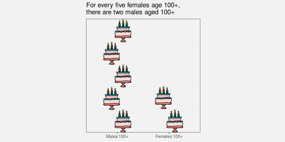

| age | 2011 | 2012 | 2013 | 2014 | 2015 | 2016 | 2017 | 2018 | 2019 | 2020 | 2021 |
|---|---|---|---|---|---|---|---|---|---|---|---|
| 14 | 583 | 524 | 446 | 378 | 318 | 305 | 280 | 281 | 270 | 244 | 219 |
| 15 | 712 | 619 | 528 | 443 | 369 | 339 | 315 | 304 | 272 | 262 | 246 |
| 16 | 810 | 723 | 615 | 482 | 426 | 365 | 328 | 334 | 314 | 302 | 257 |
How Data Visualisation Works
1 Introduction
A data visualisation presents data values in a visual format. In an effective data visualisation, this allows properties of the data to be perceived very rapidly and without conscious effort. For example, Table 1.1 shows data on the crime rate for youth offenders in New Zealand, for the ages 14 to 16, for each year from 2011 to 2021. With this purely text-based, tabular presentation of the data, it requires considerable effort and time to determine any trends in the crime rates.
By contrast, with a simple line plot data visualisation like Figure 1.1 we can perceive the trends in crime rates easily and immediately. It is also easy to perceive more detailed properties like the fact that the trend in crime rates for 16-year-olds is not completely monotonic and the fact that the crime rate for 15-year-olds (the blue line) is always greater than the crime rate for 14-year-olds (the red line) and less than the crime rate for 16-year-olds (the green line).

Figure 1.2 shows a different data visualisation of the same data, this time a heatmap. If we use a data visualisation like Figure 1.2, detecting overall trends becomes more difficult and perceiving detailed changes in the crime rates is very much harder. Not all data visualisations are equally effective.

Although Figure 1.1 is very effective for the questions that we have considered so far, it is far less effective if we are interested in a different question, for example, whether the total crime rate is completely monotonic. Does the sum of the red, blue, and green lines always decrease year on year? A single data visualisation cannot be effective for all possible questions.
Suppose that we are interested in what the exact crime rate was for 16-year-olds in 2011. Neither Figure 1.1 nor Figure 1.2 is the best option for answering this quesion. The best option in this case is actually Table 1.1.
What makes a data visualisation effective? Why are some data visualisations more effective than others? The purpose of this document is to provide explanations for why, when, and how data visualisation works.
1.1 How will it help?
You may have heard that statisticians hate pie charts.1 But do you know why? Do pie charts have any redeeming features?
Conversely, bar plots are extremely popular, but why are they so good? Knowing more about why different plots work for different situations will help us to make better decisions about when to use what sort of data visualisation.
Understanding how data visualisation works will enable us to:
- Decide which data visualisations we should use.
- Justify our choice of data visualisation.
- Critically analyse data visualisations created by others.
- Reason about how to improve the effectiveness of a data visualisation.
- Reason about whether a novel visualisation will be effective.
1.2 Scope
The focus of this document is static data visualisations for presentation. The assumption is that our data values have an interesting property and we want to produce a display that makes it easy and efficient for viewers to perceive that property. Some of the information that we cover will also apply to interactive graphics and to exploratory graphics, but the specific requirements of those types of data visualisation will not be addressed.
TODO: link to interactive graphics books like Cook & Swayne and Theus and Unwin.
This document is also focused on what vision science has to tell us about effective data visualisation. We will consider factors that influence how rapidly and how accurately information can be extracted from a data visualisation. This will include findings from a broad range of research, encompassing Statistics, Computer Science, and Psychology.2 However, this document does not cover all fields of research that impact on data visualisation. We will not, for example, address the ethical use of data visualisation, beyond a basic assumption that we want to faithfully represent the properties of the data.
TODO: link to Alberto Cairo at least. franconeri et al 2021 has some Cairo refs For resources on this important topic, see …
TODO also mention “story-telling” or “narratives” ? or “task taxonomies” ?
It is also important to acknowledge that vision science cannot yet tell us everything about how data visualisation works. However, what is known will help us to have some understanding of why some data visualisations are so effective and others are less effective.
1.3 Terminology
Data visualisations come in a wide variety of forms (see Figure 1.3), with each form having its own name: scatter plots, line plots, bar plots, histograms, etc. There are also many different names for the different components of a data visualisation: lines, bars, points, axes, scales, legends, keys, titles, sub-titles, etc.


In this document, we will reduce that complexity in two ways. First of all, we will not distinguish between different forms of data visualisation; scatter plots, bar plots, line plots, and histograms are all just data visualisations. Secondly, we will distinguish between only three core components of a data visualisation: data symbols, guides, and labels.3
- Data symbols
- Data symbols are the geometric shapes that represent data values, for example, the lines in a line plot, the bars in a bar plot, and the segments of an annulus in a donut plot (see Figure 1.4). We will spend a lot of time looking at how data symbols work.


- Guides
- Guides are the elements of a data visualisation that explain how data values are represented, for example the axes on a line plot or bar plot and the legend on a donut plot (see Figure 1.5). We will see later that guides have a lot in common with data symbols.


- Labels
- Labels are the text elements that provide context and background information about a data visualisation (e.g., titles and captions). Labels may also guide the viewer to the important properties of the data. Notice that not all text elements are labels.


1.4 Mappings
Although we have reduced a data visualisation to just three components, data symbols, guides, and labels, there are still many possible variations. Which data symbols are being used? How are the axes labelled? What colours are being used? As much as possible, we are going to further reduce the design of a data visualisation to a single question: What mappings are being used?4
Much of this document is focused on considering how data values are being converted, or mapped, into a visual representation. For example, in the line plot of crime rates for different ages in New Zealand in Figure 1.1, the data values are year, crime rate, and age (see Table 1.1) and the data symbols are a set of coloured lines.
We can describe this data visualisation in terms of a set of mappings (see Figure 1.7):
Each
yearvalue is mapped to a horizontal position along the x-axis and eachratevalue is mapped to a vertical position along the y-axis. For example, theyear2011 maps to a location near the left edge of the plot and therate810 maps to a position near the top edge of the plot.
The combined values ofyearandrateare mapped to the locations through which we draw the coloured lines.Each
agevalue is mapped to a colour. For example, theage16 maps to a green colour. Theagevalues are mapped to the colours of the lines.


year, rate, and age to x and y positions and colour. The bottom image is an animation; try refreshing the page or viewing the image it in its own tab to rerun the animation.
The heatmap of the same data (see Figure 1.2) provides a different visual representation because it involves different data symbols, rectangles this time, and a different set of mappings (see Figure 1.8):
Each
yearvalue is mapped to a horizontal position along the x-axis and eachagevalue is mapped to a vertical position along the y-axis. For example, theyear2011 maps to a location near the left edge of the plot and theage16 maps to a position near the top edge of the plot.
The combined values ofyearandrateare mapped to the locations at which we draw the coloured rectangles.Each
ratevalue is mapped to a colour. For example, therate810 maps to white, while lowerratevalues map to progressively darker shades of purple. Theratevalues are mapped to the colours of the rectangles.


year, rate, and age to x position, colour, and y position. The bottom image is an animation; try refreshing the page or viewing the image it in its own tab to rerun the animation.
We will look at a variety of different mappings from data values to data symbols (Figure 1.9). Understanding why some mappings work better than others will help us to understand why some data visualisations are more effective than others.

1.5 Summary
Data visualisations can be incredibly effective for presenting important properties of data values. However, any one data visualisation can only be effective for certain data values and for certain data properties.
The goal of this document is to explain why some data visualisations are more effective than others; how data visualisation works.
The important elements of a data visualisation are data symbols, which are visual representations of the data values, guides, which explain how data values are transformed to data symbols, and labels, which provide context and guidance.
We can characterise a data visualisation in terms of the mappings that it uses to convert data values into data symbols.
2 The Visual System
Understanding why some mappings are more effective than others will depend upon an understanding of how the human visual system works. The effectiveness of a mapping from data values to data symbols will depend on how well we can map back from the data symbols to the properties of the data (Figure 2.1).

In this section we will establish a very simple model of the visual system that we can refer to as we discuss different mappings.5
2.1 The eye
In order for us to perceive a data visualisation, light must emit from the (on-screen) data visualisation or reflect off the (printed) data visualisation and enter the eye. Light passes through the pupil, is focused by the lens, and is projected onto the retina at the back of the eye. The retina contains around 100 million light-sensitive nerve cells and signals from those are combined into about 1 million nerve fibres in the optic nerve, which passes signals on to the brain (see Figure 2.2). A very large amount of visual information is gathered by the eye and passed on to the brain.

2.2 Visual focus
Figure 2.3 show a slightly more detailed view of the structure of the eye (compared to Figure 2.2). The retina contains two types of light-sensitive cells: cones and rods. The cones are sensitive to colour and are concentrated very densely at the centre of the retina, an area called the fovea. Rods only detect the amount of light and are spread more sparsely towards the periphery of the retina.
This arrangement means that, despite the experience of a complete, detailed field of view, we only get detailed and colourful information from a small foveal region. The information from our peripheral vision is colourless and low-resolution.

Furthermore, when we view an image, we do not simply stare at the centre and see everything. Instead, we perform a series of fixations, which are brief periods of focus on one area of the image, with saccades in between, which are rapid changes in the location of our focus. Figure 2.4 demonstrates that where we look within an image makes a difference.6

Figure 2.5 shows eye-tracking data from one person viewing an image for 10 seconds.7 The fixations are shown as circles (with larger circles representing longer fixations) and the saccades are shown as lines between the circles. For example, we can see that the viewer has fixated multiple times upon the large, colourful circles.


2.3 Visual processing
The processing of the signals from the optic nerve occurs in several areas of the brain. Very basic visual features are extracted first, such as position (spatial arrangements), angle (orientations), colour, and simple patterns (spatial frequencies). This low-level information is passed on and built upon to produce higher-level representations, such as regions and shapes. Information is then also integrated from prior knowledge to assist with the identification of objects—things like trees, animals, and faces.

Lower-level processing occurs subconsciously and more rapidly than higher-level processing, which can require conscious effort. Furthermore, lower-level processing occurs in parallel and can involve many instances of visual features at once, whereas higher-level processing will only focus on a small number of items. On the other hand, lower-level visual features are rapidly discarded as our attention shifts, while higher-level visual objects are more persistent and may become part of long-term memories (see Figure 2.7).

Figure 2.8 shows an image that is made up of many small items: tiny triangles with different lengths, orientations (angles), and colours. The orientations of the triangles represents wind direction and the length of the triangles represents wind strength; blue triangles are over the sea and green triangles are over land.9 The visual system can very quickly perceive many small items like this at once. There is no need to concentrate separately on every individual triangle in the image. At a higher level of processing, darker and lighter regions are identified as well as regions of different colours. For example, a band of lighter wind forms a line from the top-left corner at a roughly 45-degree angle. At a higher level of processing again, at least for the denizens of Oceania, the green regions are recognised as a very familiar object: the outline of New Zealand.
The small lines convey a lot of simple pieces of information—what is the wind strength and direction at each location—though we have to focus on a particular spot in order to extract that information. The darker and lighter regions convey several more complex ideas like regions of stronger and lighter winds. The green regions combine to convey the single complex and abstract concept of New Zealand.

2.4 Visual differences
The ability to gather a large amount of basic features from an image very quickly is supplemented by rapid visual processing that combines and summarises the information. These subconscious processes extract some properties from an image without any mental effort.
For example, in Figure 2.9 (a) we can detect the one teal dot amongst the 24 orange dots without effort. Figure 2.9 (b) shows that this task remains effortless even if the number of distractors is much larger.10


This ability to identify an item that is different from all other items within an image also applies to other basic features like size, as shown in Figure 2.10.


If an item differs on more than one visual feature, the effect is even stronger (Figure 2.11). The visual system is very sensitive to items that are different in terms of basic visual features.


On the other hand, if the distractor items are both similar on one visual feature, but different on another, and if the arrangement of the items is less structured, then finding a particular item of interest becomes much harder. For example, if we look for the single larger teal dot in Figure 2.12, it is much harder to find than it is in Figure 2.11. The visual system’s sensitivity to different items is much greater when all other items are the same.


2.5 Visual attention
Where we focus within an image is not random.11 The figures from Section 2.4 show that our attention is automatically drawn to the larger, brighter, and more colourful items within an image. This happens due to very early visual processing and without conscious thought.
Where we focus within an image, and what information we extract, is also affected by conscious goals—what are we looking for?12 For example, when you were looking for the larger teal dot in Figure 2.12, did you notice that there was also a single small orange dot? Now that your attention has been drawn to that task, it will be easier to find the smaller orange dot.
2.6 Visual similarities
In Figure 2.12, we can see several groups of items: orange dots, teal dots, large dots, and small dots. These separate groups of items are identified based on their similarity—each group of items have the same size and the same colour.
As with the detection of differences that we saw in Section 2.4, the grouping of similar items within an image happens automatically and without conscious effort. Furthermore, there are other visual properties that mean we automatically perceive items as groups: items that are close together (items that have similar positions) are seen as a group; items that are connected by lines are seen as a group; and items that are enclosed by a border or background are seen as a group.13
For example, in Figure 2.13 there are several matrices of dots. In each matrix, we can see either rows of dots or columns of dots by manipulating visual features that affect our perception of groups: dots that are closer together for a group; dots that are the same colour form a group; dots that are connected by lines form a group.

These grouping effects are very powerful and can even be used to override each other in some combinations. Figure 2.13 shows that an enclosing border can be stronger than a connecting line, connecting lines can be stronger than closeness, and closeness can be stronger than similar colours.

2.7 Summary
The human visual system captures a very large amount of information from the visual field.
Detailed information is only available at the centre of the visual field so multiple fixations are required to capture detailed information from multiple locations within an image.
Large numbers of simple features are rapidly extracted, while more complex visual items take longer and require more congnitive effort, but persist for longer.
Large, bright, colourful items automatically stand out.
Items are automatically grouped in terms of similarity (of basic visual features), proximity, connection, and enclosure.
The main point is that the visual system is very good at perceiving certain visual features.
An effective data visualisation will make use of the things that the visual system is good at.
3 Visual Features
We have established that the mappings from data values to data symbols are fundamental to a data visualisation. However, there are many possible ways to convert data values into visual representations; there are many possible mappings to choose from.
We have also begun to explore the visual system and we have identified three levels of visual processing: visual features, visual shapes, and visual objects.
In this section, we begin to explore different sorts of mappings, starting with the simplest sort of mapping, where each data value is mapped to a basic visual feature of a data symbol (Figure 3.1).


a) is mapped to a visual feature (x) of a single data symbol.
3.1 Bar plots
In order to demonstrate mapping data values to visual features, we will work with a data visualisation of the total number of crimes for different ethnic groups. The data values are shown in Table 3.1.
| group | total |
|---|---|
| European/Other | 31274 |
| Māori | 41787 |
| Pasifika | 6993 |
| Unknown | 5632 |
A bar plot of these data is shown in Figure 3.2. This is a very effective way to visualise the total values, particularly if we are interested in comparing the raw totals. With this data visualisation, it is very easy to answer questions like the following:
- Which ethnic group has the largest total number of offenders?
- Which ethnic group has the smallest total number of offenders?
- Is the total number of offenders higher for
MāoriorPasifika? - Is the total number of offenders for
European/Othermore or less than half the total forMāori?

Why is the data visualisation in Figure 3.2 so effective? To help answer that question, we need to look at how the data values are being mapped to data symbols.
3.2 Visual features
The data symbols in Figure 3.2 are a set of rectangles or bars. However, the important visual feature of the rectangles is their length; the thickness of the bars does not relate to the data values at all (see Figure 3.3). The total number of crimes for each ethnic group is represented by the length of a rectangle. Each data value is mapped to the length of one rectangle.

total number of crimes, have been mapped to the lengths of the bars (the purple lines).
There is another mapping being used in Figure 3.2: The crime group is mapped to the vertical positions of the bars (see Figure 3.4). Each group value is mapped to the vertical position of one rectangle.

groups, have been mapped to the positions of the bars (the purple dots).
Length and position are examples of basic visual features. One way to make an effective data visualisation is to map data values to the basic visual features of a data symbol. This is effective because basic visual features are identified rapidly and without conscious effort by our visual system. Figure 3.5 shows some other examples of basic visual features.

One reason why a bar plot is an effective data visualisation is because it involves a mapping from data values to the basic visual features of data symbols—the the positions and lengths of bars—and basic visual features are processed rapidly and subconsciously by our visual system.
3.3 Quantitative features
As we discussed in Chapter 2, the real purpose of mapping data values to data symbols is to make use of the visual system to map back to the data values. In this section, we are considering mappings from data values to basic visual features, so we need to consider how well we are able to map back from visual features to data values (Figure 3.6).

One issue to consider is whether a visual feature is able to represent all of the information in the data values.15 Some types of data contain more information than others:
Quantitative data consists of numeric values, which naturally possess not only an ordering, but information about the size of differences between values. For example, the
year2020 comes after the year 2010 and there is a gap of 10 years in between. This is also referred to as interval data. Ratio data is quantitative data that also contains a “zero” reference value, so there is also information about absolute size and ratios of differences. For example, 200 offenders is twice as many as 100 offenders.Qualitative data consists of categorical values that are typically character values. Ordinal data consists of categories that are ordered, but there is no information about the size of differences. For example, a “high” crime level is more severe than a “medium” crime level, which is more severe than a “low” crime level, but we cannot measure the size of the differences. Nominal data consists of just group labels, e.g., ethnic groups, and the only information we have is that the categories are different from each other.
Figure 3.7 shows that position, length, angle, and area are visual features that are capable of representing quantitative data values. For example, a bar that is twice as high as another bar comfortably represents a data value that is twice as much as another data value. All but position also possess a natural representation of zero.

By contrast, Figure 3.8 shows that colour and shape are not capable of representing quantitative values. For example, the colour blue is not twice the colour green and a plus sign is not 10 more than a triangle. In effect, these visual representations lose information.

The bar plot in Figure 3.2 visualises the total number of offenders, which are quantitative data values. These quantitative values are mapped to the lengths of bars, which is a visual feature that is capable of conveying all of the information in quantitative values.
One reason why a bar plot is effective for visualising quantitative data values is because the quantitative data values, the counts, are mapped to a quantitative visual feature, the lengths of the bars.
3.4 Qualitative features
If we have qualitative data, then we are primarily concerned with conveying differences between data values. Figure 3.9 shows that position, colour, and shape are capable of representing qualitative data values. For example, blue is clearly different from green, which is clearly different from brown.

By contrast, Figure 3.10 shows that length, area, and angle are not appropriate for representing qualitative data values. In this case, the visual features imply an inherent order, which is misleading because that adds information that is not present in the data values.

The bar plot in Figure 3.2 maps the ethnic groups, which are qualitative data values, to the position of bars, which is a qualitative visual feature.
One reason why a bar plot is effective for visualising qualitative data values is because the qualitative data values, the groups, are mapped to a qualitative visual feature, the positions of the bars.
3.5 Accuracy
Another issue that impacts on how well we can map back from a visual feature to the data values (Figure 3.6) is the accuracy with which we can perceive quantitative values from visual features. For example, how well can we perceive the size of the difference between the length of two bars?16
It is easy to demonstrate that judgements of this sort are harder for some visual features than others. For example, Figure 3.11 presents sets of three bars, which differ by length, circles, which differ by area, and polygons, which differ by shape (number of sides). Judging the relative sizes of the bars is easier than judging the relative sizes of the circles and comparing the polygons is extremely difficult.

This issue has been studied experimentally and Figure 3.12 shows the established ordering of the accuracy of basic visual features, with more accurate visual features at the top.17 A data visualisation that maps data values to visual features near the top of this ranking will be more effective than one that maps data values to visual features near the bottom.

The bar plot in Figure 3.2 maps the total number of offenders, quantitative values, to the lengths of bars, which is an accurate visual feature. This means that viewers can make accurate comparisons between the lengths of the bars.
One reason why a bar plot is effective for visualising quantitative data values is because the quantitative data values, counts or proportions, are mapped to a very accurate visual feature, the lengths of the bars.
3.6 Capacity
When we are visualising qualitative data values, we are no longer concerned with accurately perceiving the size of differences; all we are concerned with is perceiving whether two values are different. For example, can we perceive a difference between two colours?
The issue in this scenario is the capacity of a visual feature: how many different categories can be represented (and still perceived as clearly different from each other).
Figure 3.13 shows that colour has a limited capacity. A small number of different colours are very easy to differentiate, but the differences become harder to perceive with a greater number of colours.

By contrast, Figure 3.14 shows that position has a very large capacity. We can easily differentiate between locations even as the number of locations becomes large.

The bar plot in Figure 3.2 maps the ethnic group to the position of bars, which makes it easy to differentiate between the different ethnic groups.
One reason why a bar plot is effective for visualising qualitative data values is because the qualitative data values, the groups, are mapped to a visual feature that has excellent capacity, the positions of the bars.
3.7 Case study: Dot plots
We have seen that, for several reasons, Figure 3.2 is an effective way to visualise the total number of offenders for different ethnic groups. Figure 3.15 shows an alternative representation of these data in the form of a dot plot (Cleveland 1985).

Like the bar plot, this is a very effective data visualisation, and for very similar reasons. This data visualisation uses a different data symbol, data points instead of bars, but each data value is mapped to a basic visual feature of one data symbol. Furthermore, the quantitative data values (the totals) are mapped to the horizontal position of the points, which is a very accurate visual feature, and the qualitative data values (the groups) are mapped to the vertical position of the points, which is a visual feature with a high capacity.
It could be argued that the dot plot in Figure 3.15 is even more effective than the bar plot in Figure 3.2 for perceiving the differences between totals because position ranks higher than length in Figure 3.12. On the other hand, if we want to compare totals in terms of their ratios, Figure 3.2 is superior because it includes a representation of zero.
3.8 Case study: Pie charts
Figure 3.16 shows yet another visualisation of the total number of offenders for different ethnic groups, this time a pie chart. This is a less effective representation of the data than the bar plot in Figure 3.2 or the dot plot in Figure 3.15 and we can use familiar reasoning to see why.

The data symbols in Figure 3.16 are wedges or segments of a circle and, on the positive side, the data values are mapped to basic visual features of these symbols: The total values are mapped to the angle and/or area of the wedges and the group values are mapped to the colour of the wedges. Although colour is an appropriate visual feature to represent qualitative data, and it has sufficient capacity to differentiate between only four groups, the mapping of quantitative values to angle and/or area leads to less accurate perception of the differences between totals (compared to the lengths and positions employed in the bar plot and the dot plot).
3.9 Summary
A bar plot is a very common data visualisation for representing numeric values, particularly counts, for several different groups. There are several reasons why bar plots work so well:
- A bar plot maps data values to basic visual features, which are perceived rapidly and without cognitive effort.
- A bar plot maps the quantitative counts to a quantitative visual feature (length) and the qualitative groups to a qualitative visual feature (position).
- A bar plot maps the counts to a visual feature that is perceived very accurately (length) and the groups to a visual feature that has a high capacity (position).
Dot plots are also very effective for the same scenario for the same reasons, except that a dot plot uses position instead of length to represent the quantitative values.
Pie charts by comparison have some weaknesses:
- A pie chart maps quantitative counts to angle and/or area, which is less accurate.
- A pie chart maps qualitative groups to colour, which has a lower capacity.
4 Length
Figure 4.1 shows a bar plot of the total number of offenders in each police district in New Zealand (for ages 14 to 16 and from 2011 to 2021). For the reasons outlined in Chapter 3, this data visualisation is effective for comparing the number of offenders in different police districts.

Figure 4.2 shows a bar plot of the same data, but with the bars ordered from longest to shortest. This data visualisation uses the same mappings as Figure 4.1—police districts are mapped to the vertical positions of the bars and the total counts are mapped to the lengths of the bars—which means that it is also effective for comparing the total number of offenders between police districts.

However, Figure 4.2 is more effective than Figure 4.1 for some comparisons. For example, it is easier to compare the Northland district with the Tasman district in Figure 4.2. The fact that two data visualisations with the same mappings can have a different effectiveness suggests that there is more to know about how different visual features work.
This section covers some more details about how quantitative visual features work.
4.1 The distance effect
In Section 3.5, we saw that position and length were the most accurate visual features (see Figure 3.12). However, this accuracy decreases if the two visual features that are being compared are not in close proximity (see Figure 4.3).18
This helps to explain why Figure 4.2 is more effective than Figure 4.1 for some comparisons (e.g., Northland versus Tasman).

One reason for ordering the bars in a bar plot from longest to shortest is because, for some common comparisons, the ordering places the bars that are being compared closer together, which improves the accuracy of the comparison.
4.2 Unaligned length
Figure 4.4 shows that it is harder to accurately compare the lengths of two bars if they are unaligned and do not share a common base. This also applies to the accuracy of comparing positions.

Figure 4.5 shows an alternative visualisation of the data on the total number of offenders in different ethnic groups. The bar plot of these data that we saw in Figure 3.2 mapped ethnic groups to the positions of the bars so that the bars were arranged vertically with a common left-hand edge. In Figure 4.5, the ethnic groups are mapped to different colours and the bars are “stacked” horizontally.
Although the total number of offenders has been mapped to the same visual feature in both Figure 4.5 and Figure 3.2, the lengths of the bars, comparing those lengths is much harder in Figure 4.5 because the lengths are unaligned.

One reason why stacked bar plots are less effective for some comparisons is because we are forced to compare the unaligned lengths of the bars.
4.3 Case study: Stacked versus side-by-side bar plots
Stacking bars, which creates unaligned lengths, is something that arises when we use a bar plot to show a quantitative variable broken down by more than one qualitative variable. For example, Table 4.1 shows data on the number of offenders in different ethnic groups for individual years (from 2011 to 2021). This is a more detailed version of the data from Table 3.1.
| group | count | year | |
|---|---|---|---|
| 1 | Māori | 5957 | 2011 |
| 2 | Pasifika | 1092 | 2011 |
| 3 | European/Other | 5775 | 2011 |
| 4 | Unknown | 194 | 2011 |
| 6 | Māori | 5458 | 2012 |
| 7 | Pasifika | 1040 | 2012 |
Figure 4.6 shows the number of offenders (quantitative) for each ethnic group (qualitative) and for each year from 2011 to 2021 (qualitative, or at least discrete). In this data visualisation, the number of offenders is mapped to the lengths of the bars, the years are mapped to the horizontal position of the bars, the ethnic groups are mapped to the colours of the bars, and the bars are stacked vertically.
The problem that we face in this situation is that there are four bars to show for each year. Stacking the bars is one solution, but as we have just seen, this makes some comparisons more difficult. For example, we can easily see that the number of offenders in the unknown group increased after 2016, but it is much harder to see what has happened to the European/Other group since 2016.

An alternative visualisation is shown in Figure 4.7. This has placed the four ethnic groups side-by-side for each year. It is now easier to see the changes over time for the European/Other group because all bars are now aligned. Unfortunately, as we saw in Section 4.1, some comparisons are more difficult because the bars are now further apart and have distractors in between.

Yet another variation is shown in Figure 4.8. This time we have placed all years side-by-side for each ethnic group. This provides the clearest view of the changes over time for each ethnic group because the relevant bars are close together and aligned. However, there are other comparisons that are considerably more difficult because of the distance between the relevant bars, for example, comparing between ethnicities for a specific year.

There is no single best visualisation in general for this situation because different visualisations each have their strengths and weaknesses. If a particular sort of comparison is to be emphasised, then one data visualisation might stand out, but there is also the option of providing more than one data visualisation in order to cover more comparisons.
4.4 Perception is relative
Figure 4.9 shows that the perception of differences is relative; it is easier to detect smaller differences when the visual features that we are comparing are smaller.19 It is easier to see that the pair of bars on the left have different lengths and harder to see that the pair of bars on the right have different lengths. All three pairs of bars have different lengths, but the absolute size of the difference is the same, so the size of the difference relative to the bar lengths gets smaller as the bars get longer.

Figure 4.10 shows that we can make it easier to judge the differences by providing reference marks. Each pair of black bars is the same and each pair of bars differs in length by the same small amount. The difference between the bars in each pair is difficult to perceive because the difference is small relative to the lengths of the bars. The reference marks in the middle and right-hand pair of bars provide shorter lengths to compare, so we are able to more easily perceive the small differences. For example, for the pair of bars on the right, we can compare the lengths of the short white gaps rather than comparing the longer black bars.

Figure 4.11 shows a bar plot of the number of offenders in each police district (Figure 4.1) with some grid lines added. Although it is difficult to compare the bars for Northland and Tasman because they are quite far apart and there are distractors in between (Section 4.1), the addition of the grid lines makes it easier to perform the comparison because we are able to compare the distances from the ends of the bars to the nearest grid line. Those distances are much shorter than the bars so it is easier to perceive the small difference.

One reason why grid lines are effective is because they allow comparisons of smaller lengths or distances, which means that it is easier to perceive smaller changes.
4.5 Summary
Bar plots are effective because they map quantitative values to lengths, which are accurate visual features.
However, comparisons between the bars in a bar plot can be difficult if the bars are far apart, especially if there are distractors in between.
Furthermore, stacked bars are more difficult to compare because they require comparing unaligned lengths.
Finally, it is easier to perceive differences between shorter bars than between longer bars because the perception of differences is relative.
Grid lines can help with comparisons because they make the distances being compared smaller, so smaller differences are easier to detect.
5 Colour
Figure 5.1 shows a pie chart of the number of offenders for different levels of crime seriousness (between 2011 and 2021). In this data visualisation, level, which is a qualitative variable, is mapped to colour, which is appropriate for representing qualitative values (see Section 3.4). It is easy to identify different crime levels because it is easy to perceive differences between the colours of the wedges in the pie chart.

Figure 5.2 show another pie chart of the same data, again mapping the qualitative level to colour. It is again easy to differentiate between different crime levels because we can easily perceive differences between the colours of the wedges. However, Figure 5.2 is more effective than Figure 5.1 because we can also perceive an ordering of the wedges from more serious crimes, which are darker wedges, to less serious crimes, which are lighter wedges.

The fact that there can be two data visualisations, Figure 5.1 and Figure 5.2, with the same mappings, the qualitative level of crime maps to the visual feature colour, but the two data visualisations have different effectiveness suggests that there is still more to learn about how different visual features work.
This section covers some more details about how qualitative visual features work.
5.1 Hue, chroma, and luminance
We have so far taken a very simplistic approach to colour, treating it as if it is a single qualitative visual feature (see Section 3.4). However, the perception of colour can be divided into three separate visual features: hue, chroma, and luminance (see Figure 5.3).20 Hue describes what we normally refer to as the colour name: reds, oranges, yellows, greens, blues, and purples. Chroma describes the colourfulness, from bright to dull, and luminance describes the lightness, from dark to light. Our visual system is capable to perceiving changes in hue and changes in chroma and changes in luminance.
We have described colour as a qualitative visual feature so far, but that really strictly only applies to hue. For example, Figure 4.5 used different hues to represent different ethnic groups. Hue is excellent for the perception of differences.

5.2 Ordinal visual features
Chroma and luminance are both qualitative visual features in that they can be used to visualise different groups, but they are also ordinal visual features because we can perceive an ordering from a set of colours that differ in terms of either chroma or luminance or both. A set of colours that transitions from darker to lighter and/or brighter to duller conveys an ordering from larger to smaller.
This helps to explain why Figure 5.2 is more effective than Figure 5.1. In Figure 5.2, the colours differ mostly in terms of luminance and chroma so we are able to perceive changes from larger values to smaller values because the colours transition from darker to lighter.
In this sense, chroma and luminance are able to convey more information than hue because they can represent nominal differences and ordinal differences, whereas hue can only represent nominal differences.
On the other hand, Figure 5.4 shows that chroma and luminance are even more limited than hue in terms of capacity. We can only use chroma and/or luminance to represent nominal data when there are very few different groups to represent.

5.3 Perception is relative
We saw in Section 4.4 that perception of lengths is relative. For example, smaller differences in length are easier to see when the lengths themselves are short (see Figure 4.9).
There is a similar rule for the perception of colours. Our perception of a colour is affected by neighbouring colours.21 This effect is demonstrated in Figure 5.5: the same colour when surrounded by a darker background appears lighter than it does when surrounded by a lighter background.

This effect also applies to the perception of hue. Figure 5.6 shows a pie chart of the number of offenders in each police district, with police district mapped to the colour of the wedges. There are two issues with the perception of the wedge colours: each wedge is affected by its neighbour so that, for example, some of the blue wedges look more green at the boundary with their more blue neighbour and more blue at the boundary with their more green neighbour; furthermore, the colours in the legend are perceived differently from the corresponding colours in the wedges because the legend colours are surrounded by white.

The pie chart in Figure 5.6 is not an effective data visualisation because it maps qualitative data values with lots of different groups to colour hue. This exceeds the capacity of the hue visual feature; it is difficult to clearly distinguish between all of the different hues (see Section 3.6).
Although it does not make the use of hue any more appropriate, for the purposes of demonstration, we can solve the colour perception problems in Figure 5.6 by adding a white border to all of the wedges (see Figure 5.7).

5.4 Case study: Divergent colour palettes
Figure 5.8 shows a heatmap of the points differential for Tier One nations at each Rugby World Cup. The data symbols are rectangles, or “tiles”. The teams are mapped to the vertical positions of the tiles and the years are mapped to the horizontal positions of the tiles. These are both effective mappings and we can easily map back to teams or years. The points differentials are mapped to the colour of the tiles, but in a slightly complicated way. Positive data values map to a shade of purple, while negative values map to a shade of brown. In both cases, we have a constant hue, with increasing chroma and decreasing luminance as the data values get further away from zero.
The use of two hues creates two different groups (positive and negative values), while the changes in chroma and luminance convey changes in absolute magnitude (if only for ordinal comparisons).

A diverging colour palette is effective because it creates two distinct ordinal visual features.
5.5 Summary
Colour is really three visual features: hue, chroma, and luminance.
Hue is excellent for representing nominal data values.
Chroma and luminance can be used to represent ordinal data values, but they have a very limited capacity.
6 Visual Congruence
Figure 6.1 shows a pie chart of the proportions of total youth offenders between 2011 and 2021 in different ethnic groups and a bar plot of the same data. We learned in Section 3.5 that mapping quantitative proportions to lengths, like in the bar plot, is more accurate than mapping the proportions to angles or areas, like in the pie chart.
However, the superior represenation of the fact that Māori offenders make up approximately 50% of the total is the pie chart rather than the bar plot.
Although it is easy to determine from the length of the bar and the scale on the x-axis in the bar plot that the bar for Māori is just below 0.5, it is even easier, without any guides at all, to see that the light blue wedge in the pie chart is just under half a circle. It is also easy to see that the red wedge is close to a third of a circle.


The purpose of this section is to show that we need to consider more than just the accuracy or capacity of our mappings from data values to basic visual features in order to understand the effectiveness of a data visualisation.23
6.1 Part-to-whole
The reason why the pie chart in Figure 6.1 is more effective than a bar plot for conveying proportions is because the wedges in a pie chart are congruent with fractions of a whole. A semi-circle has a strong visual association with half of a circle and thirds and quarters are similarly evocative.
One reason why a pie chart can be effective is because segments of a pie vividly convey fractions of a whole.
Figure 6.2 shows that if we place a bar representing a proportion bar within a reference rectangle that corresponds to a proportion of 1, then we can also create a part-to-whole congruence with bars, though the effect is not as strong as it is for pie wedges.

6.2 More is more
We saw in Section 3.3 that visual features like length and area are appropriate for conveying quantitative values. For example, in Figure 6.3, the lengths of the bars are appropriate for conveying the total number of offenders in different ethnic groups.
Part of the reason why length and area work so well is because a longer bar naturally conveys the idea of more. By contrast, the position of data points in a dot plot of the same data, as shown in Figure 6.3, do not inherently convey the same sense of more. In a bar plot, the data symbols that correspond to larger data values are actually larger data symbols; the presentation of larger data values is more abstract in a dot plot.


Another way that length can convey information more naturally than position is visualising negative values. For example Figure 6.4 shows the total points differential (points scored minus points conceded) for Tier One nations at Rugby World Cups. The direction of the bars very clearly indicates the change from positive points differential to negative points differential.

By comparison, the change from positive to negative points differential is much more abstract in a dot plot of the same data (Figure 6.5).

One reason why bar plots are effective is because larger data values are represented by larger data symbols.
A more subtle effect can be seen in Figure 6.6, which shows two different bar plots of the total number of offenders in different ethnic groups. In this case, the vertical bars are more natural for conveying count data like this because of the natural correspondence with stacks of items.24


6.3 Same is same
In Section 2.4 we saw that the visual system is very sensitive to differences, particularly when everything else remains the same. This means that mapping changes in data values to changes in data symbols will be effective because the visual system will notice the differences in the data symbols. More specifically, if a visual feature of a data symbol changes then the visual system will notice that change. Furthermore, if a visual feature of a data symbol changes while all other visual features of the data symbol remain the same, the visual system will notice the change more easily.
For example, in a bar plot like Figure 3.2, the data symbols are bars and only the lengths of the bars and the vertical positions of the bars are different. The “widths” of the bars and the colours of the bars remain the same.
Another reason why bar plots are effective is because the bars differ in length, but are otherwise the same.
6.4 Visual dissonance
The fact that length and area naturally convey amounts means that care must be taken not to confuse that association. For example, Figure 6.7 shows the number of times each team entered the opposition’s final third during a match at the 2023 Women’s World Cup. The final third of the pitch is shown as darker green regions, broken into five different zones, with a number of entries for each zone and for each team represented by a line with an arrow.
In Figure 6.7, longer lines correspond to a larger number of entries. However, the bars start at the halfway line on the pitch rather than at the final third of the pitch. This means that the zero entries by South Africa into the second-from-right zone is represented by a non-zero-length line. Apart from making comparisons of the line lengths very inaccurate, this creates a confusing visual effect because the viewer is expected to associate a non-zero length with a value of zero.

For any example of congruence, where a visual feature naturally corresponds to a property of the data, there is an opportunity for dissonance if the visual feature is used inappropriately. We can improve the effectiveness of a data visualisation by taking advantage of visual congruence and we can reduce the effectiveness of a data visualisation if we create visual dissonance.
TODO need expansion of colour dissonance (possibly preceded by section on colour associations?)
Figure 6.8 shows that we can also create dissonance with our mappings of data values to colours.

We saw in Section 6.3 that we want to map differences in data values to differences in visual features and keep everything else the same. Failing to follow that approach will make it harder to perceive changes in the data values. However, a worse error, and another source of visual dissonance arises if we change visual features without any underlying change in the data values.
Figure 6.9 shows a data visualisation of the relative number of people aged over 100 for females versus males. There are numerous problems with this data visualisation, but here we will just focus on the horizontal position of the cake images. The cakes for females are positioned to the left of the cakes for males, which is acceptable because that difference in position reflects a difference in the data—males versus females. However, within each gender, the cakes are also staggered a small amount to the left then to the right. This visual difference in the cake positions does not correspond to any difference in the data values. We are tempted to seek meaning from the the left-to-right staggering of the cakes when no meaning exists.
We will see other examples of visual changes that do not relate to changes in the data in Section 8.3 and Section 12.4.

A data visualisation is not effective if it contains mappings that are dissonant because that can cause distraction and slower and/or incorrect mappings back to the data.
6.5 Case study: Jittering
The Rugby World Cup is a competition that is held every four years, with the first event taking place in 1987. We have data on the number of points that were scored in World Cup matches for Tier One nations (the top 10 rugby-playing nations). Table 6.1 shows a sample of these data.27
| team | opposition | year | scored | conceded | match |
|---|---|---|---|---|---|
| Argentina | Australia | 2003 | 8 | 24 | 57 |
| Argentina | England | 1995 | 18 | 24 | 29 |
| Argentina | South Africa | 2007 | 13 | 37 | 85 |
| Argentina | Ireland | 1999 | 28 | 24 | 48 |
| Argentina | New Zealand | 2011 | 10 | 33 | 98 |
| Argentina | Wales | 1991 | 7 | 16 | 18 |
Figure 6.10 shows a scatterplot of the number of points scored by teams from different hemispheres at Rugby World Cup matches. In this data visualisation, the data symbols are dots, the number of points scored is mapped to the horizontal position of the dots, and the hemisphere is mapped to the vertical position of the dots.
To ameliorate the overlapping of data points, a random amount of “jitter” has been added the vertical position of the dots. The filled interior of each dot is also semitransparent.

The scatter plot in Figure 6.10 is effective for mapping back to the number of points scored because each data value maps to the horizontal position of a single data symbol. Similarly, we can easily map back to the separate hemispheres.
On the other hand, the jittering means that there are visual differences between the vertical positions of the dots that do not correspond to any differences in data values. For example, there are two dots representing matches where a team from the Northern hemisphere scored zero points. The data values for these two dots are identical (zero points scored and northern hemisphere), but they are visually different. The randomness of the jittering may help to dilute any temptation to seek meaning from the artificial visual difference, but the addition of jittering may cause confusion.
Jittering data symbols is effective because it reduces the amount of overlap amongst data symbols, but jittering may also reduce the effectiveness of a data visualisation because it introduces visual dissonance.
6.6 Summary
The effectiveness of a data visualisation may depend on more than just the accuracy and capacity of visual features.
Visual congruence refers to whether a data symbol or visual feature has a natural correspondence with properties of the data.
Some data visualisations are effective because they are visually congruent.
Data symbols that are larger for larger data values are more effective.
Data symbols that only change if the data values change are more effective.
Visual dissonance refers to whether a data symbol or visual feature contradicts properties of the data.
Some data visualisations are not effective because they are visually dissonant.
7 Data Summaries
In Chapter 3 we described a data visualisation as a mapping from data values to the visual features of a data symbol (Figure 3.1). For example, a bar plot, like Figure 3.2, maps the total number of youth offenders to the lengths of bars.
We also emphasised the importance of the mapping back from the visual features to the data values. For example, the effectiveness of the bar plot in Figure 3.2 relies on our ability to accurately perceive the lengths of the bars, particularly relative to each other.
In the simple scenario of a bar plot, the data values are total counts (Table 3.1), which are mapped to the lengths of bars, which allow us to map back to the total counts (Figure 3.6).
In this section, we explore some data visualisations that are effective because they rely on data summaries instead of raw data values.
7.1 Box Plots
Figure 7.1 shows box plots of the number of points scored by all teams at Rugby World Cup matches (Table 6.1), with a separate box plot for teams from different hemispheres. This is an effective data visualisation for comparing the distributions of points scored between hemispheres because we are able to easily see differences between the median values of the countries (the thick vertical lines) and differences between the interquartile ranges of the countries (the horizontal rectangles). For example, we can see that the median points scored by southern hemisphere teams is larger than the median for northern hemisphere teams and the interquartile range of points scored is also wider for southern hemisphere teams.

Box plots are quite different from bar plots and dot plots because the data symbol is a much more complicated shape: there is a vertical line to represent the median, a rectangle to represent the interquartile range (lower quartile to upper quartile), and horizontal lines to represent the extremes of the data values, from the the quartiles to the minimum and maximum values. Points are also included for “outliers” if data values lie further than 1.5 times the interquartile range beyond the quartiles.
Another important difference with a box plot is that it maps data summaries to visual features of the data symbol (Figure 7.2). For example, the median values are mapped to the horizontal positions of thick vertical lines and the interquartile ranges are mapped to the lengths of horizontal rectangles.

To be explicit, the data values that are being mapped to visual features in Figure 7.1 are not the raw data values in Table 6.1; the values that are being mapped to visual features in Figure 7.1 are the data summaries shown in Table 7.1. These are the values that we can map back to from the boxplots in Figure 7.1.
| minimum | lower quartile | median | upper quartile | maximum | |
|---|---|---|---|---|---|
| South | 6 | 15 | 22 | 33 | 101 |
| North | 0 | 10 | 16 | 24 | 67 |
Figure 7.1 is effective for allowing us to compare summaries like the medians between different hemispheres because, although the box plot data symbol is relatively complicated, a box plot still just maps the data summaries to visual features. We know from Chapter 3 that position and length are effective for mapping back to the data summaries (Figure 7.2).
Notice how, even though Table 7.1 contains very few values, the data visualisation in Figure 7.1 makes it much easier to perceive the differences between the two rows of values in Table 7.1. Once again, we can see the power of mapping values to basic visual features. The only differences from previous sections is that we are mapping data summaries rather than raw data values and we are mapping to the visual features of a more complicated data symbol.
A box plot is effective at conveying information about the distribution of data values because it maps data summaries about the distribution, like the median and interquartile range, to basic visual features.
7.2 Visual summaries
Figure 7.3 shows stacked dot plots of the number of points scored by countries from the different hemispheres in Rugby World Cup matches. This data visualisation uses the same data as Figure 7.1, but it maps raw data values rather than data summaries and it uses much simpler data symbols (data points). This data visualisation maps the number of points scored maps to the horizontal position of a data point and it maps the hemisphere to the vertical position of a data point.
Because this data visualisation maps raw data values to visual features, it is possible to map back to raw data values (Figure 3.6). For example, it is possible to see that the lowest score (zero points) for a northern hemisphere team ocurred twice. It is also possible to see that there are scores that have never occurred in any matches: 1, 2, 4, and 5. These features are not visible in the boxplots in Figure 7.1.

The fact that we can map back to raw data values from a dot plot is not news. That is easy because we have mapped raw data values to accurate visual features (see Section 3.7). However, Figure 7.3 also demonstrates that, in addition to mapping back from visual features to raw data values, our visual system allows us to map back from visual features to data summaries.
For example, we can see that the southern hemisphere teams score slightly more points on average than the northern hemisphere teams; the data symbols for southern-hemisphere teams appear shifted to the right of the data symbols for northern-hemisphere teams. In other words, we can perform visual summaries that map back to data summaries. For example, we can visually average the positions of the data points.
In Figure 7.3, we have mapped raw data values to visual features, which has enabled us to map back to raw data values. In addition, visual summaries of the visual features enable us to map back to data summaries (Figure 7.4).28

A dot plot is effective not just for perceiving raw data values, but also for perceving data summaries like clusters and outliers, and central tendency and spread.
7.3 Case study: Histograms
Figure 7.5 shows a histogram of the number of points scored by Tier One nations at the Rugby World Cups (Table 6.1). A histogram is similar to a box plot in two ways: a histogram is a data visualisation that can be used to convey the distribution of a variable; and a histogram is a data visualisation that maps data summaries, rather than raw values, to visual features (Figure 7.2).
However, a histogram differs from a box plot in two main ways: the data symbol for a histogram is simpler than a box plot (just rectangles or bars); and the data summaries for a histogram are more complicated than those for a box plot.
The raw data values for the histogram in Figure 7.5 are the points scored in each game by each country (Table 6.1). To get the data summaries for the histogram, the raw data values are binned; we break the range of the data into equal-sized intervals and count how many data values lie in each interval. The centre of each interval is then mapped to the horizontal position of a bar and the count of data values in each interval is mapped to the length of a bar.

To be explicit, the values that are being mapped to visual features in Figure 7.5 are not raw data values, but data summaries—intervals and counts—as shown in Table 7.2.
| interval | 0-5 | 5-10 | 10-15 | 15-20 | 20-25 | 25-30 | 30-35 | 35-40 | 40-45 | 45-50 | 50-55 | 55-60 | 60-65 | 65-70 | 70-75 | 75-80 | 80-85 | 85-90 | 90-95 | 95-100 | 100-105 |
| count | 11 | 51 | 44 | 63 | 38 | 29 | 19 | 15 | 7 | 7 | 2 | 1 | 1 | 3 | 0 | 1 | 0 | 0 | 0 | 1 | 1 |
As with a box plot, mapping data summaries to accurate visual features means that we can easily map back to the data summaries. For a histogram, this means that we can easily compare the lengths of the bars, which means we can easily compare the relative counts of data values within each interval. For example, the longest bars represent the intervals that contain a relatively large count of data values, which tells us about the mode of the data (or the number of modes in the data). In Figure 7.5 we can see that the largest number of data values occur around 15 to 20 points and we can see that the number of data values in each interval drops more rapidly above the highest bar than below the highest bar. The latter tells us about the spread and/or skewness of the data.
A histogram is effective at conveying information about the distribution of data values because it maps data summaries to basic visual features and those data summaries can be compared to provide information about the distribution of the data.
7.4 Caveats
The benefit of a data visualisation that maps data summaries to visual features is that it allows us to perceive data summaries very easily. For example, although we can perceive a general idea of central tendency from the dots in Figure 7.3 (see Section 7.2), it is much easier and more accurate to perceive median values from the thick vertical lines in Figure 7.1.
The flipside is that a data visualisation that maps data summaries to visual features is not effective for mapping back to raw data values. For example, we cannot see from the box plot in Figure 7.1 that the scores 1, 2, 4, and 5 never occurred, while this is clear from Figure 7.3 because the dot plot does map the raw data values to data symbols.
Box plots and histograms are not effective at conveying raw data values because they do not map raw data values to data symbols.
Another point to consider with a data visualisation that is based on data summaries is whether the data summaries provide reasonable summaries of the data. For example, Figure 7.6 shows box plots of the number of points conceded by each team in Rugby World Cup games. The box plot for southern hemisphere teams suggest a unimodal distribution with a slight right skew.

However, the dot plots in Figure 7.7 tell a different story. This data visualisation shows some evidence that the number of points conceded by southern-hemisphere teams may be bimodal, with some teams only conceding very few points (0, 3, or 6) in a number of games. The data summaries for a box plot assume a unimodal distribution, so a box plot will only ever tell a unimodal story, and that is only reasonable if the data are unimodal.

A box plot is not effective if a five-number summary is not a sensible summary of the data values.
A data visualisation that is based on data summaries can only be effective if the data summaries are sensible summaries of the data.
A further complication arises with histograms because we have to choose the intervals that are used to calculate the data summaries and that choice can have a large influence on the data summaries. For example, Figure 7.8 shows a histogram of the same data that we used for Figure 7.5, but with a greater number of narrower intervals. This visualisation tells a slightly different story than Figure 7.5. The most common score is now 6 points and we see features like gaps at 1, 2, 4, and 5 points and a stronger suggestion of bimodality.
Unlike a box plot, where the data summaries are essentially fixed calculations, for a histogram we get to choose the data summaries to some extent, which means that we get to choose the story that the data visualisation tells. Figure 7.5 tells a simpler story, but Figure 7.8 tells a story that includes some important details.
When using a histogram for exploring a data set, it is a good idea to try out more than one choice of intervals in order to avoid missing an important story. When using a histogram to present a story about a data set, there is a responsibility to present a story that does not exclude important details.

7.5 Summary
Data summaries, such as measures of central tendency, measures of variability, and tables of counts, provide information about the distribution of a set of data values.
Some data visualisations, like box plots and histograms, are effective because they map data summaries to visual features. This makes it easy to perceive and compare data summaries.
Care must be taken to use data summaries that appropriately summarise the data values.
When we map raw data values to visual features, like in a dot plot, the perception of individual visual features allows us to perceive and compare raw data values, but, in addition, visual summaries of collections of visual features allow us to perceive and compare data summaries.
A box plot that maps data summaries to visual features is more effective for perceiving data summaries than a dot plot that relies on visual summaries. However, a dot plot is more effective for perceiving raw data values.
8 Combining Mappings
Most data visualisations involve more than one data variable. For example, the bar plot in Figure 3.2 involves data on the ethnic group of offenders and data on the total number of offenders in each ethnic group.
In Figure 3.2, each data value is mapped to a visual feature of a data symbol (Figure 3.1). For example, the ethnic group is mapped to the vertical position of the bars and the total number of offenders is mapped to the length of the bars.
We have so far only looked at mappings from data values to visual features in isolation. For example, we know that the mapping from ethnic group to position is effective because it uses a visual feature that is appropriate for qualitative data and it uses a visual feature with a large capacity. We also know that mapping the total number of offenders to length is effective because it uses a visual feature that is appropriate for quantitative data and a visual feature that is accurate. Furthermore, the lengths of the bars are all aligned (they have a common baseline).
In this section, we begin to consider what happens when mappings are used in combination. For a start, we will just extend our thinking to data visualisations that involve mapping two data variables to two visual features, where each pair of data values maps to a single data symbol (Figure 8.1).

a and b) is mapped to two visual features (x and y) of a single data symbol.
8.1 Independent visual features
A bar plot involves mapping a qualitative variable to position and a quantitative variable to length (e.g., Figure 3.2). We know that each visual feature is effective on its own—we can map back from positions to qualitative values and we can map back from lengths to quantitative values—but another reason why the bar plot is effective overall is because the two visual features act independently.29 Our perception of the horizontal length of the bars is not affected by the vertical position of the bars.30
Figure 8.2 demostrates that we can also add colour to the mix without creating any interactions. We can perceive the colour of the bars and the position of the bars and the lengths of the bars independently of each other.

One reason why a bar plot is effective is because it maps data values to visual features that can be perceived independently.
8.2 Scatter plots
Table 8.1 shows data gathered on the performance of all twenty teams at the 2023 Rugby World Cup. Most measures are positive, for example, more points is better, but there are also a couple of negative measures: more tackles may just mean that the team was weak and was always being attacked; and more disciplinary cards (either yellow or red) is definitely a bad sign.
| country | sphere | ycards | rcards | breaks | tackles | points | converts | offloads | tries | runs |
|---|---|---|---|---|---|---|---|---|---|---|
| Namibia | South | 1.0 | 0.5 | 2.5 | 102.0 | 9.2 | 0.5 | 2.2 | 0.8 | 92.0 |
| Romania | North | 1.2 | 0.0 | 2.8 | 142.5 | 8.0 | 0.8 | 1.5 | 1.0 | 81.0 |
| Chile | South | 1.2 | 0.0 | 3.8 | 132.2 | 6.8 | 0.5 | 5.2 | 1.0 | 102.2 |
| Samoa | South | 1.2 | 0.2 | 3.8 | 109.5 | 23.0 | 2.0 | 9.2 | 2.8 | 102.5 |
| Australia | South | 0.5 | 0.0 | 5.2 | 108.2 | 22.5 | 1.8 | 7.8 | 2.8 | 110.8 |
| Georgia | North | 0.5 | 0.0 | 5.2 | 149.8 | 16.0 | 1.0 | 8.0 | 1.8 | 114.0 |
| Uruguay | South | 0.5 | 0.0 | 5.2 | 126.8 | 16.2 | 1.5 | 3.0 | 2.2 | 99.2 |
| South Africa | South | 0.4 | 0.0 | 5.4 | 139.1 | 29.7 | 2.7 | 5.4 | 3.9 | 95.1 |
| England | North | 0.0 | 0.1 | 5.6 | 124.9 | 31.6 | 2.3 | 3.9 | 3.0 | 100.3 |
| Fiji | South | 1.0 | 0.0 | 5.6 | 99.8 | 22.4 | 2.2 | 8.8 | 2.4 | 138.0 |
| Wales | North | 0.6 | 0.0 | 5.6 | 167.4 | 32.0 | 3.2 | 7.6 | 3.8 | 109.4 |
| Japan | North | 0.8 | 0.0 | 6.0 | 166.2 | 27.2 | 2.8 | 4.8 | 3.0 | 89.5 |
| Tonga | South | 0.5 | 0.2 | 6.0 | 141.2 | 24.0 | 2.0 | 8.2 | 3.2 | 107.5 |
| Argentina | South | 0.3 | 0.0 | 6.3 | 111.7 | 26.4 | 2.6 | 6.0 | 2.7 | 131.3 |
| Italy | North | 0.5 | 0.0 | 6.8 | 138.2 | 28.5 | 3.8 | 7.0 | 3.8 | 116.0 |
| Portugal | North | 0.5 | 0.2 | 7.8 | 148.0 | 16.0 | 1.5 | 9.2 | 2.0 | 118.2 |
| Ireland | North | 0.2 | 0.0 | 8.8 | 126.4 | 42.8 | 5.0 | 9.4 | 6.0 | 137.6 |
| France | North | 0.2 | 0.0 | 11.0 | 115.2 | 47.6 | 5.0 | 10.6 | 6.0 | 126.0 |
| Scotland | North | 0.2 | 0.0 | 11.2 | 123.0 | 36.5 | 4.8 | 13.8 | 5.2 | 151.2 |
| New Zealand | South | 0.7 | 0.3 | 12.6 | 123.4 | 48.0 | 5.0 | 8.3 | 7.0 | 139.3 |
Figure 8.3 shows a scatter plot of the number of “clean breaks” per game versus the number of “tries scored” per game for each team. A clean break means that a team has broken through the opposition defence and a “try scored” means that the team has earned 5 points. A clean break implies an opportunity to score a try, but does not guarantee that a try will be scored.

The data symbol in a scatter plot is a data point, in this case a circle. There are two mappings in the scatter plot in Figure 8.3: the quantitative number of clean breaks is mapped to the horizontal position of the data points and the quantitative number of tries scored is mapped to the vertical position of the data points.
We know from Chapter 3 that using position means that we should be able to accurately map back to the original data values. For example, we can easily see that one team scored a little over 7.5 clean breaks per game and we can see that two teams scored about 6 tries per game.
However, there is something else going on in the scatter plot. The two explicit mappings to horizontal and vertical position interact to create an additional visual feature:31 position in space (Figure 8.4).32 For example, we can perceive not only horizontal and vertical distances between data points, but also euclidean distances between data points (“as the crow flies”).

One reason why a scatter plot is effective at conveying relationships between variables is because the mappings of data values to visual features—horizontal position and vertical position—interact to produce an additional visual feature: position in space.
Furthermore, our visual system allows us to perceive visual summaries (see Section 7.2) of position in space (see Figure 8.5).33 For example, in Figure 8.3 we can easily see a positive correlation between the number of clean breaks and the number of tries scored. We can also easily see clusters of data points; the four data points in the top-right corner of the plot appear separate from the other data points.
TODO relate perception of clusters to gestalt proximity

One reason why a scatter plot is effective at conveying relationships between variables is because we are able to perceive visual summaries from a collection of positions in space.
8.3 Case study: Mosaic plots
Table 8.2 shows a table of counts for offences committed in New Zealand in 2021. For each offence, we know the sex of the offender and what action was taken against the offender.
| Female | Male | |
|---|---|---|
| Court Action | 13950 | 39526 |
| Non-Court Action | 8717 | 19663 |
| Not Proceeded With | 381 | 933 |
Figure 8.6 shows a mosaic plot of the data in Table 8.2.34 This is an effective data visualisation for making several comparisons: the proportion of male versus female offenders; within each sex, the proportion of different actions against offenders; between sexes, the distribution of different actions; and the overall proportions of combinations of sex and action against offenders.
For example, we can see that there are more male offenders than female offenders, court action is more common than non-court action for both males and female offenders, court action is more common for male offenders than for female offenders, and the most common offences involve male offenders and result in court action.

A mosaic plot is another example of a data visualisation that maps data summaries to data symbols rather than raw data. The data symbols are rectangles, the widths of the rectangles are mapped from the proportion of male versus female offenders and the heights of the rectangles are mapped from the proportions of actions taken within males and females (see Table 8.3).
| Female | Male | |
|---|---|---|
| Court Action | 0.28 | 0.72 |
| Non-Court Action | 0.28 | 0.72 |
| Not Proceeded With | 0.28 | 0.72 |
| Female | Male | |
|---|---|---|
| Court Action | 0.61 | 0.66 |
| Non-Court Action | 0.38 | 0.33 |
| Not Proceeded With | 0.02 | 0.02 |
One reason why a mosaic plot is effective is because it maps proportions and conditional proportions, rather than raw counts, to the visual features of rectangles.
A mosaic plot is also an example of a data visualisation that maps to visual features that interact. The explicit mappings involve proportions to the widths and heights of the rectangles and we know from Section 3.3 that this will allow accurate mapping back from lengths to proportions.
One reason why a mosaic plot is effective is because it maps proportions to lengths.
However, the interaction of these mappings produces an emergent feature, which is the area of the rectangles (Figure 8.4). Importantly, these areas correspond to additional data summaries, in this case, the overall proportion of offences in each combination of sex and action taken.
One reason why a mosaic plot is effective is because the mappings
to length and height interact to produce area, which represents overall proportions.
One weakness of mosaic plots is that area is not the most accurate visual feature (Section 3.5), so we are not able to map back to overall proportions as well as we are able to map back to the proportions that are represented by the separate widths and heights of the rectangles.
Another weakness is that the lengths and heights of the rectangles are unaligned (Section 4.2). This compromises the accuracy of comparisons of widths between categories or the comparisons of heights between categories. This weakness is greater if there are more categories and/or larger differences between categories than we see in Figure 8.6. For example, Figure 8.7 shows a mosaic plot of the proportions of offenders in different age groups and, within age groups, the proportions of actions against the offender at a finer level of detail than in Figure 8.6. If we attempt to compare the proportion of offences that result in “Formal Warnings” in younger age groups versus older age groups, we are hampered by the fact that the pink rectangles do not have a common vertical baseline. As a side note, we are also hampered in that case by the distance and distractors between the rectangles (see Section 4.1); the ordering of the variables and the ordering of categories can have an impact on the effectiveness of a mosaic plot just like ordering the bars of a bar plot.

These weaknesses are exacerbated for mosaic plots of more than two variables. For example, the mosaic plot in Figure 8.8 shows proportions of youth versus adult offenders, then within age levels proportions of male versus female offenders, then within combinations of age levels and sex proportions of different actions taken against the offender. Even though there are only very few levels for each variable, our ability to compare heights and widths of rectangles is impaired by distance and distractors.

A final weakness with mosaic plots is that the shape of the rectangles changes as well as the area. In Section 6.4 we saw that changes in visual features should only reflect changes in the data.
Figure 8.9 shows that we can create different rectangles with the same area, but different shapes. There can be rectangles within a mosaic plot with the same area, which represents the same overall probability data value, but with different shapes. The different shapes are a visual signal of differences in the data when in reality no difference exists.

8.4 Case study: Interaction plots
Figure 8.10 shows an interaction plot of the number of offenders in different ethnic groups, comparing 2011 to 2021. The raw data are shown in Table 8.4.
| group | year | count |
|---|---|---|
| Māori | 2011 | 5957 |
| Pasifika | 2011 | 1092 |
| European/Other | 2011 | 5775 |
| Unknown | 2011 | 194 |
| Māori | 2021 | 2869 |
| Pasifika | 2021 | 328 |
| European/Other | 2021 | 1833 |
| Unknown | 2021 | 1589 |
The purpose of the interaction plot is to show the change in the number of offenders between 2011 and 2021 for each of the ethnic groups. If the lines of the interaction plot were parallel we would conclude that the same change has happened to all ethnic groups; the fact that the lines are not parallel indicates that there have been different changes in some ethnic groups compared to other ethnic groups.35

The data symbols in Figure 8.10 are straight line segments. The year is mapped to the horizontal start and end position of the lines and the number of offenders is mapped to the vertical start and end position of the lines. The ethnic group is mapped to the colour of the lines. These mappings are effective for mapping back to the raw data values in Table 8.4.
In addition, the explicit mappings generate an emergent feature: the angle of the lines. Furthermore, the angle of the lines allow us to map back to a data summary: the change in the number of offenders between 2011 and 2021 (see Figure 8.5).
An interaction plot is effective because the angle of the lines allows us to map back to changes in the data values.
It is more difficult to perceive the change in the number of offenders for each ethnic group in a bar plot like the one shown in Figure 8.11. Partly this is because we have to perceive and compare two bars for each ethnic group rather than a single line.

8.5 Summary
The mappings in a bar plot—quantitative data values to lengths and qualitative values to position—are effective because we are able to perceive some combinations of visual features, such as length, position, and colour independently.
A scatter plot is effective for perceiving relationships between variables because the mappings of quantitative data values to both horizontal and vertical positions interact to produce position in space and our visual system is capable of producing useful visual summaries of position in space, such as correlation.
The effectiveness of a mosaic plot also depends upon the interaction of visual features: marginal and conditional proportions are mapped to widths and heights, which produce area to represent overall proportions.
9 Visual Shapes
All of the data visualisations that we have considered so far have mapped a single data value from one or more variables to a single data symbol (Figure 9.1 (a)). For example, a bar plot like Figure 3.2 maps one category and one count to one bar. A scatter plot like Figure 8.3 maps one data value from a quantitative variable and one data value from another quantitative variable to one data point.
In this section, we consider data visualisations that map multiple data values from one or more variables to a single data symbol (Figure 9.1 (b)), which results in more complex data symbols.

a and b are mapped to the visual features, x and y, of a single data symbol.
9.1 Line plots
Figure 9.2 shows a line plot of the number of offenders per year in different ethnic groups from 2011 to 2021 (see Table 4.1). This data visualisation is very effective for perceiving changes over time in the number of offenders within each group as well as comparing the changes over time between groups.

There are some familiar mappings in this data visualisation: year is mapped to horizontal position, the number of offenders is mapped to vertical position, and the ethnic group is mapped to colour. However, the data symbols in this data visualisation, the coloured lines, are different from any previous examples that we have seen. Although there are 44 rows of data, there are only 4 data symbols because multiple rows of data are used to create each data symbol. Each line in Figure 9.2 represents 11 pairs of year and count values.
This contrasts with visualisations like bar plots that use simpler data symbols. For example, the bar plot of the same data in Figure 4.7 has 44 bars.
Figure 9.2 is effective at conveying changes over time because the coloured lines create visual shapes (Figure 9.3) and those visual shapes convey information about collections of data values. For example, we can perceive slopes and curves and peaks and valleys in each of the coloured lines.

In terms of the simple visual processing model from Section 2.3, these more complicated shapes can convey more sophisticated information, at the expense of more cognitive effort, and with a limit on how many shapes we can process simultaneously (see Figure 2.7). In other words, the more complex data symbols allow us to map back to data summaries (Figure 9.4). For example, in Figure 9.2 we are able to perceive overall trends in the number of offenders, periods of more rapid change versus periods of slower change, and local maxima and minima.
In terms of Chapter 6, the use of lines for data symbols is also congruent with trends in the data; we naturally associate slopes with increases and decreases in data values.36

One reason why line plots are effective is because they pack lots of data values into a complex data symbol that creates a visual shape, from which we are able to map back to data summaries.
On the other hand, the more complex data symbols in a line plot, that contain multiple data values, are less effective at conveying the individual raw data values. The coloured lines in Figure 9.2 are not simple shapes from which it is easy to perceive basic visual features. This means that, although we may be able to map back to data summaries, it is not easy to map back to the raw data values (Figure 9.4). For example, compare the ease with which we can determine the number of European/Other offenders in 2013 from Figure 9.2 versus Figure 4.7.
This deficiency is significant because the main mappings in a line plot are from quantitative data values to (horizontal and vertical) position. We know from Chapter 3 that these should be very effective mappings that allow us to accurately map back to the raw data values. However, in a line plot, we are not mapping a single data value to a basic visual feature of a single, simple shape. Instead, a single data value is being mapped, along with lots of other values, to a basic visual feature of a complicated shape. In effect, the individual data values lose their individual identity.
One reason why a line plot is not effective for mapping back to raw data values is because each raw data value is not mapped to its own data symbol.
The creation of complex data symbols from multiple data values bears some similarity to the creation of emergent features by combining visual features (Section 8.2). In both cases, we have explicit mappings from data values to basic visual features and we produce an implicit additional visual effect. The difference here is that with complex data symbols, we are collapsing multiple data values into a data symbol, so we run a higher risk of losing the ability to perceive individual data values.
There is also a similarity between complex data symbols and visual summaries (Section 7.2). In both cases, we gain the ability to perceive data summaries from collections of data values. Again, the difference is that with visual summaries, we are summarising many simple data symbols that each represent individual data values, whereas with a complex data symbol we perceive the data summary from a single data symbol that obscures the individual data values.
9.2 Case study: Scatter plots with lines
Figure 9.5 shows a data visualisation of the number of offenders per year in different ethnic groups (Table 4.1). This is very similar to Figure 9.2, but we have added a data point at every horizontal and vertical position.
Like Figure 9.2, we can perceive overall trends from the line data symbols, but we can also perceive individual data values more easily because now every individual data value is mapped to its own data symbol.

9.3 Case study: Density plots
Figure 9.6 shows a density plot of the number of points scored by Tier One nations at the Rugby World Cups (Table 6.1). As with a histogram (Figure 7.5), this data visualisation is effective for conveying the distribution of data values. For example, we can perceive that there is evidence of a single mode and right skew.

Also like a histogram, a density plot actually maps data summaries, density estimates rather than raw data values, to visual features (see Table 9.1). However, rather than mapping each data summary to its own data symbol, a density plot maps all of the data summaries to a single data symbol, a line, to create a visual shape. The density estimates are mapped to the horizontal and vertical positions of a single line data symbol. The visual shape allows us to perceive summaries of the density estimates. For example, is there a single maximum density and how does the density change to either side of that peak.
| scored | density |
|---|---|
| 0.00 | 0.0055 |
| 0.20 | 0.0059 |
| 0.40 | 0.0063 |
| 0.59 | 0.0067 |
| 0.79 | 0.0071 |
| 0.99 | 0.0075 |
Figure 9.7 shows the path from raw data values to the visual shape in a density plot and the summary information that we can map back to. We cannot map back to the raw data values from a density plot, nor can we map back very easily to the data summaries (the density estimates). The only real purpose of the data symbol in a density plot is to map back to summaries of the data summaries, so that we can perceive features of the density estimates.

A density plot is effective because it conveys high-level features of density estimates of the raw data.
A final commonality between density plots and histograms is that we get to choose how the data summaries are calculated from the raw data values. In the case of a density plot, we must choose a “kernel” and a “bandwidth”, both of which affect the smoothness of the density estimates. This means that we may need to explore more than one kernel and bandwidth (see the end of Section 7.4).
9.4 Caveats
Need a caveat that more complex shapes does NOT necessarily mean useful mappings back to data summaries - could just end up with a mess.
9.5 Summary
10 Multiple Mappings
Figure 10.1 shows a data visualisation of the performance measures for teams in the 2023 Rugby World Cup (Table 8.1). This visualisation is different from anything we have seen previously because it involves multiple mappings. The data symbol in this case is a simple data point, but we have mapped data values to five different visual features of each data point. The number of clean breaks is mapped to the horizontal position of the data points and the number of tries is mapped to the vertical position of the data points. The number of points scored is mapped to the size of the points, the hemisphere is mapped to the shape of the points, and the number of runs is mapped to the colour of the points.

Figure 10.1 is effective in some ways because some of the mappings are to effective visual features. For example, we can easily map back from horizontal and vertical positions to the number of clean breaks and the number of tries. We can also map back from the emergent feature of position in space (Section 8.2) to a correlation between clean breaks and tries.
However, other mappings are less effective. For example, it is less easy to accurately map back from size to the number of points scored and even harder to map back from colour to the number of runs.
TODO relate back to gestalt in visual-model where lots of things changing makes pop-out stop working.
One goal of visualising multiple variables like we have in Figure 10.1 is to discover or display multivariate relationships between the variables. For example, we can see that there are four teams in the top-right corner of the plot that are all relatively large and relatively dark in colour, which suggests that there is a group of teams that run more, make more clean breaks, score more tries, and score more points compared to the other teams.
This section looks at some of the different approaches to visualising several variables at once. How do we perceive multivariate relationships? Can we still perceive individual data values at the same time?
10.1 Parallel coordinates plots
One issue with Figure 10.1 is that it attempts to map each data variable to a separate visual feature. Once we have used both horizontal and vertical position, we have to start using less accurate and less appropriate visual features, like area and colour for quantitative data values (see Chapter 3). If we attempted to map all of the variables in Table 8.1, we could actually run out of visual features to use (Figure 3.5).
A different approach is to map more of the data variables to the same visual feature. For example, Figure 10.2 shows a parallel coordinates plot of the data from Figure 10.1. In this visualisation, all of the quantitative variables have been mapped to position, with hemisphere mapped to colour.

A parallel coordinates plot maps data summaries rather than raw data values (Chapter 7), for example, all data values are standardised to a range between 0 and 1. Table 10.1 shows some of the values that are actually mapped to visual features in Figure 10.2. Each variable is mapped to a different horizontal position and the values within each variable are mapped to vertical position. In this way, all quantitative data values are mapped to position.
In addition, the hemisphere is mapped to colour and a separate line data symbol is drawn for each country. This means that a visual shape is drawn for each country (Chapter 9).
| country | sphere | variable | value |
|---|---|---|---|
| Namibia | South | runs | 0.16 |
| Romania | North | runs | 0.00 |
| Chile | South | runs | 0.30 |
| Samoa | South | runs | 0.31 |
| Australia | South | runs | 0.42 |
| Georgia | North | runs | 0.47 |
On one hand, a parallel coordinates plot appears to makes sense because it maps lots of data values to position, which is an accurate visual feature for quantitative data. However, this advantage is immediately squandered because the values that are mapped are not the raw data values (Figure 7.2), so a parallel coordinates plot is not effective for mapping back to raw data values.
The effectiveness of a parallel coordinates plot comes from the visual shapes produced by the lines. For example, in Figure 10.2, we are able to identify a group of four lines at the top of the plot that are separate from the other lines. This grouping across at least three variables (clean breaks, tries, and points) is easier to see compared to Figure 10.1. We can also more clearly see that there are two teams that have similar numbers of runs to the top four, but then are mixed in with the other teams on the other variables. Furthermore, the fact that many of the lines are reasonably horizontal rather than criss-crossing each other wildly suggests that there is an overall correlation between all four quantitative variables, not just in the top four teams.
A parallel coordinates plot can be effective at identifying high-dimensional groups or correlations because it maps multiple data values from different variables to a single visual shape.
10.2 Small multiples37
One difficulty with Figure 10.2 is that many of the lines overlap each other, which makes it difficult to separately perceive individual visual shapes. Figure 10.3 shows an alternative approach to visualising the same data, a profile plot, where a shape is drawn for each country. The shape in this case is a filled in polygon, effectively the lines in Figure 10.2 with the area below them (down to zero) filled in.
TODO relate to over-plotting section (wherever that ends up)
Again, this can be effective because of the overall shapes. For example, we can see a group of four shapes that are larger than the others. We can also see that Argentina and Fiji appear very similar, which was not apparent in previous plots.

Figure 10.3 uses the same data summaries as Figure 10.2 (Table 10.1), and similar mappings: each variable is mapped to a different horizontal position and the values within each variable are mapped to vertical position and hemisphere is mapped to colour. The data symbol is also similar: multiple data values are mapped to a single data symbol, either a line or a polygon.
The difference in Figure 10.3 is that, rather than having all of the data symbols on the same plot, each data symbol is drawn in its own position in space. This makes it easy to view each distinct data symbol.
The group of large shapes in Figure 10.3 is easier to see because the countries have been ordered by the number of points scored (the right-hand height of the shape). As we have seen before, ordering data symbols can make a big difference (Section 4.1).
10.3 Facetting38
Figure 10.4 shows a line plot of the number of youth offenders per year in different Police Districts of New Zealand. This visualisation has some good mappings—we map year to horizontal position and count to vertical position—but also a weaker mapping: the Police District. We map districts to colour, but because there are 12 different districts, we are exceeding the capacity of colour (Section 3.6). It is not easy to differentiate all of the different colours (not helped by overplotting of the lines).
A better mapping for Police District would be position, which has a much higher capacity, but position has already been taken by year and count.

Figure 10.5 shows one solution: a facetted plot. Each district has been mapped to a position in space and we draw a separate plot for each district. This makes it very easy to distinguish the individual districts.
One downside is that comparisons between districts are more difficult because of counts and/or years are unaligned (Section 4.2). In this case, we have mitigated that problem by drawing a grey line for all districts in each plot. Similar to grid lines, this makes it easier to compare the line for each district to other districts (Section 4.4).

We have again ordered the panels so that districts are near to other districts with a similar starting count of offenders (Section 4.1).
10.4 Case study: Scatterplot matrices
A form of facetting - get to see the correlation between all four variables like in Figure 10.2.
This tells a nice story …
Going down the diagonal: the number of runs is correlated loosely with the number of clean breaks; the number of clean breaks is more strongly correlated with the number of tries; and the number of tries is very strongly correlated with the number of points.
Going down the columns: the number of runs is correlated loosely with the number of clean breaks, a little more loosely with the number of tries and a little more loosely still with the number of points; the number of clean breaks is reasonably correlated with the number of tries and a little more loosely with the number of points.

10.5 Summary
Mention that multivariate visualisation is an area where dynamic and interactive graphics can be useful, e.g., GGobi ?
11 Visual Objects
Figure 11.1 shows a scatter plot of the number of clean breaks and the number of tries for countries at the 2023 Rugby World Cup (Table 8.1). This data visualisation is similar to Figure 8.3, but it adds an extra mapping of country names to the shape of the data symbols. This is a reasonable mapping, despite the large number of different countries, because each different shape only appears once. We are able to distinguish all countries from each other and, thanks to the legend, we can identify individual countries.

Figure 11.2 shows another scatter plot of the number of clean breaks and the number of tries for countries at the 2023 Rugby World Cup, but this time with flags as the data symbols. In one sense, this is just a variation on Figure 11.2 because the country names are mapped to the shape of a data symbol. Each data symbol is a shape that allows us to distinguish between the different countries.
The difference between the data symbols in Figure 11.1 and the data symbols on Figure 11.2 is that the flags are not only more complicated shapes, but they are familiar shapes. The flags convey differences, but they also convey the more sophisticated concept of the country names. In the terms of Section 2.3, the flags are visual objects that might take longer to process, but convey more information.

Figure 11.3 demonstrates this point by repeating the scatter plot, but removing the legend. We are still able to identify not only that the data symbols represent different things, but we can identify the country names as well.

Just to make the point completely clear, Figure 11.4 shows Figure 11.1 without a legend. There is nothing about the shape of the data symbols in Figure 11.4 that conveys the country names. We can clearly see that Figure 11.3 contains more information than Figure 11.4.

A plot that uses visual objects as data symbols can be effective because the visual objects can convey more information and more complex information.
Figure 11.3 also demonstrates a weakness of visual objects. The flags work well for identifying the country names only if we are familiar with all of the different flags. For example, it may only be Australians and New Zealanders who can reliably identify the difference between their two flags.
A plot that uses visual objects as data symbols may not be effective if the visual objects are only familiar to some people.
11.1 Case study: Choropleth maps
Figure 11.5 shows a choropleth map of the average crime rate, over the period from 2011 to 2021, in each police district of New Zealand. The data values for this map are shown in Table 11.1.
| district | rate |
|---|---|
| Auckland City | 0.32 |
| Bay of Plenty | 0.62 |
| Canterbury | 0.38 |
| Central | 0.56 |
| Counties/Manukau | 0.39 |
| Eastern | 0.66 |
| Northland | 0.61 |
| Southern | 0.49 |
| Tasman | 0.62 |
| Waikato | 0.46 |
| Waitematā | 0.28 |
| Wellington | 0.33 |
The data symbol in Figure 11.5 is a polygon representing the geographic boundary of each police district. This implicitly entails a mapping from police district to the position of each polygon. Crime rate is mapped to the fill colour of each region.
The use of polygons as data symbols is effective because the polygons form familiar shapes with familiar spatial arrangements (familiar to a New Zealand audience at least). The polygons are visual objects that convey the concepts of districts within New Zealand. The spatial arrangements are also a form of visual congruence; the arrangements mirror the real-world spatial relationships between the regions (see Chapter 6).

A choropleth map is effective because it maps geographic regions to familiar visual objects that resemble the real world regions.
A weakness of Figure 11.5 is that it maps the quantitative crime rate to colour (chroma and/or luminance). This means that we can only map back to ordinal comparisons between regions (see Section 5.2). For example, we can see that the highest crime rate occurs in the district to the east of the North Island, but it is difficult to perceive how much higher that crime rate is compared to the next highest crime rate.
A choropleth map is only effective for making ordinal comparisons between geographic regions because it maps quantitative values to colour.
Figure 11.6 shows a bar plot of the same data, which demonstrates the advantages and disadvantages of the choropleth map in Figure 11.5. In Figure 11.6, it is much easier to compare the crime rate values because crime rates are mapped to bar length, but it is much harder to associate the different regions with their spatial arrangements because all we have are the region names, which are arranged vertically and with no correspondence to the spatial arrangement of the regions in the real world.

Another potential weakness with choropleth maps is the fact that regions differ in terms of area. We know from Section 6.2 that larger data symbols are associated with larger data values. The larger polygons accurately reflect the fact that some police districts are geographically larger than others, but there is potential for larger polygons to be erroneously mapped back to larger crime rates.
Two alternative approaches are shown in Figure 11.7. These both retain the region shapes of the map, but map crime rates to the area of circles or the length of bars. These data symbols have a spatial arrangement that corresponds to the real-world arrangement of police districts and they provide a better mapping back to data values than the colours in the choropleth map, although area is still not the most accurate visual feature and the lengths are unaligned (see Section 3.5).


11.2 Chart junk
Figure 11.8 shows a version of Figure 11.5 with two cartoon villians added in the top-left and bottom-right corners.39 These sorts of annotations are often, derisively, referred to as chart junk, with the suggestion that they add no value and make it harder to extract the important information.40

The cartoon villians are an example of visual objects. They (crudely) convey the concepts of crime and criminals. However, they are not data symbols because there is no mapping from the raw data to the cartoon villians. Their position is unrelated to the data, their colour is unrelated to the data, and their size is unrelated to the data. The best that can be said is that they relate to the metadata, the general topic of the data visualisation. Annotations like this are closer in purpose to labels (see Section 12.3).
In Section 2.4 we learned that we should keep things simple and only present visual changes that correspond to changes in the data. In Section 2.5 we learned that our attention is drawn to the larger and brighter items within an image. The cartoon villians are relatively large, complex, and colourful and bear no connection to the raw data, so there is a good chance that they will distract from the visual features that do convey data values.
Chart junk is not effective because it does not map back to data values and because it distracts from the visual elements that do map back to data values.
It is important to point out that not all visual objects are chart junk. For example, the data symbols in Figure 11.8, the map regions, are also visual objects, but they differ from the cartoon villians because they are related to the data values.
Furthermore, visual objects that have no connection to the raw data may still have some positive effects. For example, the cartoon villians convey the concept of crime more dramatically than the simple text label “crime rate”. The more complex and interesting images may attract attention to the data visualisation as a whole and there is some evidence that such annotations improve the memorability of a data visualisation.41
Chart junk can be effective because it has a greater emotional impact and is more memorable.
Overall, visual objects that are not related to the raw data are not effective for mapping back to the raw data, so any other benefits have to be weighted against that cost.42
11.3 Case study: Pictograms
Figure 11.9 shows a pictogram of the number of pet dogs and pet cats globally.43 The data symbols in this plot are images, or icons, of a cat and a dog, with the number of pets mapped to the height of each icon.44 Icons are an example of visual objects; they are effective at conveying categories because they visually resemble physical objects, in this case, cats and dogs.
Unfortunately, because the cat and dog images are not simple shapes, it is harder to accurately perceive the heights of the images, so it is harder to map back to the number of cats and dogs. Even worse, we actually perceive the size, or area, of the images. The dog image is wider than the cat image so the number of dogs is visually over-emphasised.

Figure 11.10 shows two alternative uses of icons that attempt to resolve some of the problems in Figure 11.9. In Figure 11.10 (a), the images are distorted so that they have the same width and so that only the height of the images changes. There is also a bar to help with the perception of length. While the bar makes it much easier to map back to the number of pets, the distortion is not effective because it hinders the perception of the icon.
Figure 11.10 (b) uses a bar to represent the number of pets and just has a small version of the icon at the base of each bar. We know that the bar is effective for mapping back to the number of pets and the small icons are effective as labels for the bars.


Figure 11.11 shows two more alternatives to Figure 11.9. Figure 11.11 (b) is just a standard bar plot. We know that this is effective for mapping back to the number of pets.
Figure 11.11 (a) uses repetitions of the icons to represent the number of pets, still within a bar. In this case, each icon represents 100 million pets. The ability to count icons is effective for mapping back to the overall counts.45
11.4 Case study: Chernoff faces
Figure 11.12 visualises the 2023 Rugby World Cup data (Table 8.1) using Chernoff faces. The data symbol in this visualisation is a little unusual; each country is represented by a combination of circles, curves, and lines that together produce a visual object that resembles a face. The mappings in this visualisation are also a little unusual. The number of points scored is mapped to the curvature of the smile, the number of tries is mapped to the angle of the eye brows, and the number of clean breaks is mapped to the horizontal position of the eyes.

The mappings in a Chernoff face are not very accurate (see Section 3.5; curvature is ranked below colour in terms of accuracy),46 so Cheroff faces are not very effective for mapping back to raw data values.
However, the familiarity of Chernoff faces means that we are easily able to perceive common combinations of the facial features. For example, we can see several sad faces at the top-left of Figure 11.12 and several happy faces at the bottom-right. We can perceive countries that share similar combinations of performance measures. In other words, we can perceive multi-dimensional correlations and multi-dimensional groupings in the data.
In this case, the happier faces have been arranged to correspond to the more successful teams and the teams have been ordered from least points scored to most points scored. The resulting proximity helps with perceiving groups of similar faces.
A Chernoff face is effective at conveying multi-dimensional relationships because the data symbol is a familiar visual object from which we can easily perceive simple human emotions.
12 Text
Figure 12.1 is a version of Figure 1.1 with all of the text removed. Although we can see that some values, or rather three sets of values, haved decreased, we cannot tell what the values are or by how much they have decreased. If there was ever any doubt, Figure 12.1 makes it clear that text is doing a lot of important work in a data visualisation.

Eye-tracking studies also show that people spend a lot of time looking at the text within a data visualisation. For example, in Figure 2.5, there are more fixations in the regions that contain text than anywhere else.


This section looks at the role text plays in making data visualisations work.
12.1 Data symbols
Figure 12.3 is a version of Figure 3.2 with white text added to each bar showing the exact number of offenders in each ethnic group. This is an example of using text as a data symbol.

Just as data values are mapped to the visual features of the bar data symbols in Figure 12.3, data values are also mapped to the visual features of the text data symbols. For example, the ethnic groups are mapped to the vertical position of the bars and to the vertical position of the text. The data values for the number of offenders in each ethnic group are mapped to the length of the bars, but they are also mapped to the horizontal position of the text and to the shape of the text—the letters and digits that make up the text.
Compared to the bar data symbols in Figure 12.3, the text data symbols are much more complex shapes. In terms of the simple visual processing model from Section 2.3, the text data symbols are visual objects. This means that text can convey more sophisticated information, at the expense of more cognitive effort, and with a limit on how many shapes we can process simultaneously (see Figure 2.7).48
The value of text data symbols is that they allow us to map back to data values very well (Figure 2.1). In terms of the criteria that we discussed in Chapter 3, text is appropriate for both quantitative and qualitative data values, text is extremely accurate, and text has a very large capacity.
Text data symbols are effective because they can be used to represent any sort of data and they allow a very accurate mapping back to data values.
The weaknesses of text are that comparing values requires more cognitive effort compared to comparing simple visual features (like the lengths of bars), plus our visual system cannot generate visual summaries of large amounts of text (Section 7.2). This is why a table of numbers, like Table 1.1, is ineffective for perceiving groups of values or trends in values.
It is harder to compare data values that are mapped to text because it requires more effort to map back to data values and to perform mental calculations.
Large numbers of text data symbols are not effective because the visual system cannot generate visual summaries from the text.
12.2 Guides
Figure 12.4 is a version of Figure 1.1 with the guides highlighted in purple. There are tick marks and tick labels on the x-axis and y-axis, there are horizontal grid lines, and there is a legend to show the mapping from the different ages to different colours.

The first thing to note about the guides in Figure 12.4 is that they are all composed of data symbols, with data values mapped to visual features of the data symbols (Chapter 3). This is perhaps easiest to see with the grid lines. Each grid line is a data symbol where a data value, a rate of offending, has been mapped to the vertical position of the line. Similarly, each tick mark on the y-axis is a line data symbol where a rate of offending has been mapped to the vertical position of the line and each tick mark on the x-axis is a line data symbol where a year has been mapped to the horizontal position of the line. Finally, each of the tick labels on the y-axis is a text data symbol where a rate of offending has been mapped to the vertical position of the text and to the shape of the text and similar mappings apply to the x-axis tick labels. The legend is also made up of line data symbols and text data symbols, this time with age data values mapped to the colour of lines and the shape of text.
Furthermore, the grid lines, tick marks, and tick labels form groups thanks to their shared proximity (Section 2.6).
TODO also gestalt continuity because they are aligned?
The fact that guides typically involve text data symbols makes sense because a guide typically presents only a small number of known data values that we want to map back to as accurately as possible. This is the situation where text excels.
Viewed as groups of data symbols, the guides on a data visualisation make sense: the guides provide a very accurate way to map back from positions and colours on the plot to data values.
Guides are effective because they map known data values to data symbols and because those data symbols map back to data values extremely well.
12.3 Labels
Figure 12.5 shows a version of Figure 1.1 with the labels highlighted in purple. In this data visualisation, the only labels are axis titles and the legend title. An overall plot title and a plot caption are other examples of labels (see Section 1.3).

The difference between labels and the other components of a data visualisation, the data symbols and the guides, is that labels relate to metadata rather than data values. Labels contain information like descriptions of variables and units of measurement and references to data sources. These are all important pieces of information, but they are more complex, more abstract, and far fewer in number than data values, so it again makes sense that the best way to present this information is via text.

TODO Another purpose of labels is to direct attention …
top-down
Do text labels with colours that match the data symbols we want the viewer to attend to.
12.4 Case study: Word clouds
Figure 12.7 shows a word cloud data visualisation based on the text of the Wikipedia page on the Rugby World Cup (Wikipedia 2024) This visualisation shows the frequency with which different words appear on the Wikipedia page. The data values that are being visualised are shown in Table 12.1.

This data visualisation is unusual because it consists entirely of text data symbols. The mappings in Figure 12.7 are from each word to the shape of a text data symbol and from frequency to the size of a text data symbol. There is no need for a guide for the mapping from words to text shape because the mapping is exact; there is no need to “convert” each text data symbol into a word data value because it is already there.
There is no guide for the mapping from word frequency to text size, but the visualisation is still effective at conveying the relative frequencies. The larger words occurred more frequently.
| word | freq |
|---|---|
| rugby | 72 |
| world | 66 |
| tournament | 56 |
| cup | 54 |
| new | 41 |
| zealand | 38 |
The mapping of frequencies to size does not provide the best accuracy for mapping back to frequencies, so we cannot identify the exact frequency of any one word, we cannot identify the quantitative difference in frequency between pairs of words, and we cannot easily perceive the distribution of frequencies across words. A word cloud is only effective for approximate ordinal comparisons of word frequencies (Chapter 3).
Frequency is also mapped to position in space, with more frequent words placed towards the centre of the word cloud. This is an example of redundant mapping; more frequent words are both larger and more central.
TODO link back to redundant mappings
Another benefit of the mapping from frequency to position in space is the efficient use of space. For example, Figure 12.8 shows the same data presented as a bar plot with the frequency of each word mapped to a separate bar. Although the accuracy is improved for comparing frequencies, the bar plot does not have as much room for the words themselves.

One weakness of the word cloud is that the angle of words changes with no corresponding change in the data values.
TODO link this back to congruence and same=same (different=different).
A word cloud is effective for conveying relative frequencies of words because it maps words to text data symbols and it maps word frequency to both size and position in space.
12.5 Case study: Tables
Table 12.2 shows a subset of the 2023 Rugby World Cup data set (Table 8.1). We have established earlier in this section that visualising data values in a table provides an excellent basis for accurately mapping back to individual data values, but imposes a larger cognitive burden for comparing values, and is a very poor for extracting visual summaries, such as trends.
For example, it is very difficult to determine from Table 12.2 whether there is any relationship between the values in the four numeric columns.
| country | sphere | runs | breaks | tries | points |
|---|---|---|---|---|---|
| South Africa | South | 95.14 | 5.429 | 3.857 | 29.71 |
| England | North | 100.3 | 5.571 | 3 | 31.57 |
| Fiji | South | 138 | 5.6 | 2.4 | 22.4 |
| Wales | North | 109.4 | 5.6 | 3.8 | 32 |
| Argentina | South | 131.3 | 6.286 | 2.714 | 26.43 |
| Ireland | North | 137.6 | 8.8 | 6 | 42.8 |
| France | North | 126 | 11 | 6 | 47.6 |
| New Zealand | South | 139.3 | 12.57 | 7 | 48 |
However, there are standard guidelines for formatting tables of values that can improve the readability of a table, for example, Schwabish (2020). Table 12.3 shows the same data as Table 12.2, but with all numeric columns right-aligned, a consistent number of decimal places in each column, fewer decimal places than the data actually possess, and the rows have been ordered from the highest number of points per game to the lowest.
It is easier to see some structure in Table 12.2. For example, the number of tries appears to decrease as well as the number of points. We can also see some evidence of the number of breaks decreasing as well, though it is weaker.
There are some familiar explanations for the improvement in the table display. The reduction in detail, with fewer decimal places, means that there is less complexity in the visual field. The consistent number of decimal places means that less is changing, so differences are easier to detect (Section 2.4). Finally, the consistent baseline provided by right-alignment means that the text length provides a crude comparison, particularly in the column showing the number of clean breaks. However, it is worth noting that some of the accuracy of the text has been sacrificed in order to make some of these gains.
TODO provide links from ALL of these points to previous sections.
| country | sphere | runs | breaks | tries | points |
|---|---|---|---|---|---|
| New Zealand | South | 139 | 12.6 | 7.0 | 48.0 |
| France | North | 126 | 11.0 | 6.0 | 47.6 |
| Ireland | North | 138 | 8.8 | 6.0 | 42.8 |
| Wales | North | 109 | 5.6 | 3.8 | 32.0 |
| England | North | 100 | 5.6 | 3.0 | 31.6 |
| South Africa | South | 95 | 5.4 | 3.9 | 29.7 |
| Argentina | South | 131 | 6.3 | 2.7 | 26.4 |
| Fiji | South | 138 | 5.6 | 2.4 | 22.4 |
For comparison, Figure 12.9 shows a scatter plot of the data from Table 12.2. The data symbol is a circle, with the number of tries mapped to horizontal position, the number of points mapped to vertical position, the number of clean breaks mapped to size, and the number of runs mapped to colour (shade). The relationships between tries and points and between breaks and both tries and points are still easier to perceive in this plot than in Table 12.3, but Table 12.3, even with its rounding, still provides better accuracy, particularly for breaks and runs.

13 TODO
Need to refine the apologies at the start - trying to provide a simple set of principles for explaining data vis. Some detail smoothed, some detail left out.
Add another apology (in scope?) that I am ignoring the “fun” or “joy” of data vis and point to some people like Jonathon Schwabish and Flowing Data
Add gestalt simplicity and/or symmetry in visual-model? tend to see symmetric elements as part of the same group. tend to see the simplest explanation (simple shapes combined rather than some complex mess). tendency to prefer order and simplicity. and link back to it from simple vs complex data symbols and a layout section and discussions of ordering variables (to make simpler shapes)? gestalt continuity could go in too?
MUST acknowledge the mapping of differences to angles in a line plot (essentially an emergent feature!?).
Move the rwcAll table from jittering to more is more
REMOVE the
codeformatting of data variable names in mapping-visual-features.qmd (and anywhere else)add link (in footnote) to Pinker 1990, p. 111 about the importance of data type (from section on Quantitative features)
Add the purpose of each type of plot as they are introduced so that explanation of effectiveness is relative to it’s purpose Eg a bar plot is effective at… Because…
add footnote link to Simkin and Hastie (1987) to part-to-whole for pie charts (they found empirical evidence that people judge proportions better on pie charts than bar charts)
Add citations to MacEachren and Bertin (e.g., in choropleth maps)
acknowledge (in footnote) that there is not a one-to-one correspondence between visual features that are initially perceived by visual system and the visual channels of Cleveland and Mcgill, but it is a useful simplification to elide them
Add case study: interaction plots to visual-shapes ? => get to talk about line plots actually being slopes/angles (emergent features) and can add links to carswell and wickens (1990) that line plots (between two lines) are configural
somehow mention primacy of position in space in visual-model (with cite) ?
add mention in multiple mappings about implicit borders around small multiples and add footnote link to gestalt closure. OR add gestalt closure to visual-model and refer back to it AND refer back to it from the jittering case study ?
add citation for extinction illusion
add citation to MASSVIS for fixation images
Add citation to Wikipedia “Visual system” in visual-model.qmd
Add mention that mosaic plots can easily show independence or lack of ?
add mention of anscombe’s quartet to summaries.qmd to compare numerical with visual summaries.
add plot of differences between lines in crimegroup line plot ? (do NOT perceive vertical difference) citation? see franconeri 2021
add footnote about visual feature vs visual channel vs visual dimension terminology soup.
Lines imply continuity (at least) if not linear interpolation (density plot this is absolutely ok)
need citations for more is more and dark is more and part-to-whole.
Need some citations to the literature in visual-shapes.qmd
Link to “emergent features” and “gestalts” in, e.g.,
Pomerantz and Cragin (2014) ?Also link to “configural displays” (David Peebles (2008)) and “display proximity” (Barnett & Wickens, 1988; Carswell & Wickens, 1987; Wickens & Andre, 1990) “According to the proximity compatibility principle (Wickens & Carswell, 1995), representations with high display proximity fa- cilitate high mental proximity tasks requiring the integration of information from multiple sources. The relationship between dis- play and mental proximity has been revealed in several studies (e.g., Barnett & Wickens, 1988; Bennett & Flach, 1992; Bennett, Toms, & Woods, 1993; Carswell & Wickens, 1987; Wickens & Andre, 1990; Wickens & Carswell, 1995) and it is argued that the advantage comes when emergent features (Pomerantz & Pristach,
- of the representation indicate additional information about the domain.” He also mentions line plots as being in between separable bar plots and configural radar plots.
Some useful stuff in Franconeri et al (2021) ?
how mappings can go wrong?
As an umbrella for some topics below, e.g., visual illusions? The main point is that an effective data visualisation will AVOID the things that the visual system is bad at.add types of cones to colour chapter?
CVD
visual illusions (put in a section on “how mappings go wrong”?)
redundant encodings
non-linear scales separate “position” section?
big data (or even medium data) - need better name => overlapping and summary plots like boxplots (then violin plots)
use of white space around points in scatter plot
visual objects pictures as data points icons higher-level => gain more complex information transfer BUT lose visual summaries (cos not just simple shapes with simple features)? case study: chernoff faces
deliberately losing information (e.g., luminance scale for quant)
clutter link back to visual objects ? put within visual-objects?
layout (arrangement of elements of plot) come at it from visual-model perspective. alignment, proximity, repetition are all gestalt (contrast is just make things different that should be different + vice versa) overriding theme is organisation and visual simplicity alignment is continuity ?
One way to look at this is that, when you map data values to a data symbol you leave some (often several) visual features of the data symbol undetermined. How to choose values for those other visual features ?
Could also have a bit in here about highlighting to direct attention and back ref to visual attention in visual-model
As example do facetted crime district line plots with panel per year (or even just single line plot) PLUS map of regions PLUS colour scale to match panel strip fill colour (or line colours) with region fill colour on map
Another example is Figure 11.8 where the left edge and right and bottom edges of the criminal are aligned with the left and right and bottom edges of the regions AND the borders on the regions are thicker and black so that the criminals and the regions match each other better. ALSO the legend has a border so ALL lines are the same (keep everything the same that should NOT be attended to; differences are seen as significant).
somewhere in intro (?) as a footnote (?) cite Sonning (2022), which goes into great detail about how to do a line plot right; this document aims to provide a simpler set of concepts that can be applied to any data vis by a less expert reader.
aspect ratio section (in combine?)
bubble plots (area not effective => something better?)
Add citation for distance effect
Add back-ref in Labels in Text to visual attention in visual-model
Add annotation example in text that just labels with text each country in Figure 8.3
Need citation for more-is-more (kosslyn?) AND for representing negative values AND for dark is more AND for same is same (Principle of unambiguity ?)
Dark is more
Figure 5.8 also demonstrates another example of visual congruence because darker colours are naturally associated with larger data values.
Proper citation for stroop effect ?
Use reordering of Figure 4.7 (so that they start tallest to smallest) THEN should see change in that pattern later on more easily? Use this as an example of “visual shape” in a bar plot. Revisit heatmaps - regions/shapes of colours?
Need citation for contrast effect
Need citation for chernoff faces
case study of density plots (revisit histograms in terms of shape as well; point out that density plots are preferred to histograms? revisit boxplots too and talk about violin plots?)
check have not missed any major pros or cons for choropleth maps https://www.practicalreporting.com/blog/2024/8/21/ive-stopped-using-colored-region-choropleth-maps-should-you
add citation for choropleth maps
case study for spinograms
add mention of underestimation of correlation in scatter plots (with citation) in a footnote
add examples of making the WRONG thing important (e.g., use thick lines on bar borders or bright colours on unimportant elements) ?
Case study: Heatmaps
Heatmaps are a common way of representing three-dimensional data where two of the data variables are either qualitative or have been measured on a regular grid. The latter two variables naturally map to horizontal and vertical position to produce an array of rectangles, while the third variable maps to colour (see Figure 1.8).
The mappings from data values to visual features for a heatmap are …
colour is not quant but can convey trends
get contrast effect but again not typically trying to match cells
get regions/shapes of colour => higher-level structures
talk about colour palettes that have deliberate colour boundaries to emphasise structure - combination of order and category
citation for data statistics to GoG
citation for ensembles in statistics.qmd
citation for “stacked dot plot” in statistics.qmd and/or use a different name
case study: barycentric plots (ternary plots)
attributions for data sources
add example (section?) to combine.qmd where either separable is NOT appropriate or integral is NOT appropriate. In the mosaic plot case, the interaction is beneficial.
add direct labelling to text chapter? some sort of ggrepel version of the flags example in visual-objects? relate visual objects (other than text) to direct labelling?
model fits like lm straight line and ref Hadley’s data-space vs model-space “data models” to mirror “data statistics” (revisit box plots as VERY simple models? also talk about failing assumptions of these models, like unimodal for boxplot)
kiviat plots or radar plots or spider plots (David Peebles (2008))
End game/summary: Present process by which a data vis can be broken down. What data symbols are being used? (simple or complex) What mappings are being used? What do we want to map back to? (data or summaries) If mapping back to raw data, are the mappings accurate? What can be mapped back to? Are mappings congruent with data? …
Use heatmap as case study?
do the side-by-side pie chart idea as an example of reasoning your way to a new visualisation.
Move the discussion/revisit of tables from text section to here ?
Another possible application of data vis knowledge: Analyse one of the weird boxplot variations that look a bit like a ziggurat?
citations to stuff on pictographs and glyphs and icon-based plots (in clutter section?)
add citations for R packages used in plots and diagrams. General one for R and ggplot2, then specific ones for specific plots Add citation to {ggsci} for default (discrete) palette
An index that links to all of the places that different sorts of plots are discussed ?
Check all references, especially the ones generated by chatgpt !
add how-to-cite
add docker container to build in
References
Bertini, Enrico, Michael Correll, and Steven Franconeri. 2020. “Why Shouldn’t All Charts Be Scatter Plots? Beyond Precision-Driven Visualizations.” CoRR abs/2008.11310. https://arxiv.org/abs/2008.11310.
Boring, Edwin G. 1942. Sensation and Perception in the History of Experimental Psychology. Appleton-Century-Crofts.
Bowman, Daniel C., and Jonathan M. Lees. 2015. “Near Real Time Weather and Ocean Model Data Access with rNOMADS.” Computers & Geosciences 78: 88–95. https://doi.org/10.1016/j.cageo.2015.02.013.
Cairo, Alberto. 2012. The Functional Art: An Introduction to Information Graphics and Visualization. New Riders.
Cleveland, William S. 1985. “Graphical Methods for Data Presentation: Full Scale Breaks, Dot Charts, and Multibased Logging.” The American Statistician 39 (4): 270–80.
Cleveland, William S, and Robert McGill. 1984. “Graphical Perception: Theory, Experimentation, and Application to the Development of Graphical Methods.” Journal of the American Statistical Association 79 (387): 531–54.
Fellows, Ian. 2018. Wordcloud: Word Clouds. https://CRAN.R-project.org/package=wordcloud.
Franconeri, Steven L., Lace M. Padilla, Priti Shah, Jeffrey M. Zacks, and Jessica Hullman. 2021. “The Science of Visual Data Communication: What Works.” Psychological Science in the Public Interest 22 (3): 110–61. https://doi.org/10.1177/15291006211051956.
Heer, Jeffrey, and Michael Bostock. 2010. “Crowdsourcing Graphical Perception: Using Mechanical Turk to Assess Visualization Design.” In Proceedings of the SIGCHI Conference on Human Factors in Computing Systems, 203–12. ACM.
Kosslyn, Stephen M. 1989. “Understanding Charts and Graphs.” Applied Cognitive Psychology 3 (3): 185–225.
Mackinlay, Jock. 1986. “Automatic Design of Graphical Presentations of Relational Information.” ACM Transactions on Graphics (TOG) 5 (2): 110–41.
Munzner, Tamara. 2014. Visualization Analysis and Design. CRC Press.
Murrell, Paul. 2022. Gggrid: Draw with ’Grid’ in ’Ggplot2’. https://CRAN.R-project.org/package=gggrid.
Pomerantz, James R., and Anna I. Cragin. 1994. “Emergent Features and Feature Combination.” Attention, Perception, & Psychophysics 55 (1): 48–55.
Schwabish, Jonathan A. 2020. “Ten Guidelines for Better Tables.” Journal of Benefit-Cost Analysis 11 (2): 151–78.
Sönning, Lukas. 2023. “Drawing on Principles of Perception: The Line Plot.” In Data Visualization in Corpus Linguistics: Critical Reflections and Future Directions, edited by Lukas Sönning and Ole Schützler. Studies in Variation, Contacts and Change in English 22. Helsinki: VARIENG. https://urn.fi/URN:NBN:fi:varieng:series-22-2.
Stevens, Stanley Smith. 1957. “On the Psychophysical Law.” Psychological Review 64 (3): 153–81.
Talbot, Justin, Heidi Lam, Jock MacKinlay, and Jeffrey Heer. 2014. “Four Experiments on the Perception of Bar Charts.” In IEEE Transactions on Visualization and Computer Graphics, 20:2152–60. 12. IEEE.
Tufte, Edward R. 1983. The Visual Display of Quantitative Information. Cheshire, Connecticut: Graphics Press.
TVERSKY, BARBARA, JULIE BAUER MORRISON, and MIREILLE BETRANCOURT. 2002. “Animation: Can It Facilitate?” International Journal of Human-Computer Studies 57 (4): 247–62. https://doi.org/https://doi.org/10.1006/ijhc.2002.1017.
Ware, Colin. 2021. Information Visualization: Perception for Design. 4th ed. Morgan Kaufmann.
Weber, Ernst Heinrich. 1846. “Der Tastsinn Und Das Gemeingefühl.” Rudolf Wagner (Hg.): Handwörterbuch Der Physiologie. Braunschweig 3: 481–588.
Wikipedia. 2024. “Rugby World Cup: Wikipedia, the Free Encyclopedia.” http://en.wikipedia.org/w/index.php?title=Rugby%20World%20Cup.
Wilkinson, Leland. 2005. The Grammar of Graphics. Second edition. New York: Springer.
Zhang, Jiajie. 1996. “A Representational Analysis of Relational Information Displays.” International Journal of Human-Computer Studies 45 (1): 59–74.
Footnotes
Tufte (1983, p178): “the only worse design than a pie chart is several of them … pie charts should never be used.”↩︎
This document is not only a synthesis, but also a simplification of lot of different terms, theories, and results from the literature of vision science. The aim is to provide an overview that is similar in scope to more expert frameworks like (Kosslyn 1989), but more consumable by a less expert audience. The goal of this document is to provide a description that is sufficiently straightforward for the non-expert to consume, hopefully without making too many experts roll in their graves or send them to an early one. In most cases, it will be easy to see for ourselves that a visual effect is real through a simple diagram or data visualisation, but references to the relevant theories and experiments in the literature will be provided in footnotes like this one.↩︎
Gathering axes and legends together under the generic label of “guides” is from the Grammar of Graphics (Wilkinson 2005).↩︎
The idea of characterising a data visualisation as a set of “mappings” from data values to visual representations is also from the Grammar of Graphics (Wilkinson 2005).↩︎
Simple descriptions of the human visual system can be found in many articles and books on data visualisation, for example, Sönning (2023), Franconeri et al. (2021), and Cairo (2012). See Ware (2021) for a more in-depth, but still very accessible description.↩︎
Explain that this is NOT just a fovea vs periphery illusion—there is currently no complete explanation for this effect—but it serves to show that we are getting different information from different regions of the field of view.↩︎
The plot was originally from The Economist, but this image was taken from the resources provided on the MASSVIS project web site.
The eye tracking data were taken from the same web site.↩︎Only a thumbnail version of the original image is shown in order to comply with terms of use of the MASSVIS data set.↩︎
Figure 2.8 is based on wind data from the National Oceanic and Atmospheric Administration’s Operational Model Archive and Distribution System (NOMADS). The data were accessed and processed using the {rNOMADS} package (Bowman and Lees 2015), with raw data interpolated to a finer grid.↩︎
Mention “pre-attentive” plus citations.↩︎
Citation to bottom-up vs top-down.↩︎
Citation to mentions of attention filtering visual input differently↩︎
mention Gestalt “school” or whatever, plus citations. enclosure == common region↩︎
Talk about this being a quite small list; munzner has more, and Wolfe and Horowitz 2004 suggest 20? (see Pomerantz and Cragin (2014))↩︎
The idea of matching the type of data—nominal, ordinal, interval, or ratio—as well as the categorisation of visual feature types is described in Zhang (1996). Munzner (2014), following Mackinlay (1986), refers to this idea as “expressiveness”.↩︎
The pioneering work on the accuracy of different visual features for statistical graphics was carried out by Cleveland and McGill (1984). Their results have been replicated several times in subsequent studies, including Heer and Bostock (2010). The rankings were extended to a larger set of visual features by Mackinlay (1986), although somewhat only by inference from other psychophyscial results, rather than by direct experiment. An argument for ranking the accuracy of visual features can also be made from Steven’s Law (Stevens 1957), which states that the perception of the magnitude of different stimuli follows a power law. For example, the perception of length has a power of approximately one (linear), which suggests that we accurately perceive the magnitude of lengths, while area has a power less than one, which suggests that we underestimate the magnitude of areas.↩︎
In Cleveland and McGill (1984), comparisons of bars were treated as position judgements rather than length judgements, unless the bars were unaligned (see Section 4.2), so this table is a slightly fuzzy representation of their results. However, the general ordering of visual features is basically consistent with Cleveland and McGill (1984).↩︎
The first demonstration of the “distance effect” is attributed to Cleveland and McGill (1984). It has since been replicated several times, for example, by Talbot et al. (2014).↩︎
The idea of perception of differences being relative is a very old result from Psychology known as Weber’s Law (Weber 1846; Boring 1942).↩︎
The three-dimensional experience of colour arises from the fact that there are three different sorts of cones in the retina (see Section 2.1), each sensitive to a different range of light wavelengths: The L cones respond to long wavelengths (reds); the M cones respond to medium wavelengths (greens); and the S cones respond to short wavelengths (blues). The neural connections that combine the messages from the retina are also divided into three pathways: light-dark, which represents the sum of L, M, and S cones; red-green, which represents the difference between L and M cones; and blue-yellow, which represents the difference between S cones and the sum of L and M cones. For more information, see Ware (2021).↩︎
This relative perception of colours is useful for being able to adapt to a wide range of lighting conditions. See Ware (2021) for a more detailed discussion.↩︎
The {gggrid} package (Murrell 2022) was used to take the “bite” out of the panel border in Figure 5.8 where South Africa was excluded.↩︎
TVERSKY, MORRISON, and BETRANCOURT (2002) discusses congruence at least in the sense of matching the spatial properties of data values to the spatial arrangement of visual features. The concept is also discussed in Bertini, Correll, and Franconeri (2020).↩︎
horizontal bars (distances) versus vertical bars (amounts) look up Tversky and kosslyn OTOH, horizontal bars are more accurate than vertical bars (citation please!)↩︎
This data visualisation is an adaptation of a graphic shown during television coverage of the match.↩︎
This plot is based on a data visualisation from the New Zealand Listener October 14-20 2023.↩︎
Attribution to kaggle data set.↩︎
Need some references to articles about ensembles in data vis lit (ideally NOT the scatter plot one cos want to use that later for scatter plots). ALSO must relate this to Gestalt section in visual model ?↩︎
Refer to the literature that talks about separable and integral AND configural visual features.↩︎
Technically, there is an interaction because lengths that are further apart from each other vertically are harder to compare (see Section 4.1). However, compared to visual features that strongly interact, length and position are reasonably independent.↩︎
Need citations to literature that mention integral visual features.↩︎
Relate this to mentions in literature of “emergent features”, e.g., Pomerantz and Cragin (1994). Acknowledge that my use is a little loose because the use in the literature is really about separate data symbols combining to create emergent features (like clusters?).↩︎
Citations to literature on ensembles again, this time specifically to correlation in scatter plots.↩︎
This two-dimensional mosaic plot could also be called a spine plot. Mosaic plot is the more general term that includes plots of more than two qualitative variables.↩︎
An interaction plot is typically used in a more experimental setting where the x-axis might be different treatments and the groups might be different patient groups and the y-axis might be a measure of response to treatment. The outcome is then whether the treatment has had the same effect for different patient groups (or not).↩︎
According to Zacks and Tversky 1999 people use “trend words” (increasing/decreasing) versus “discrete words” (higher/lower than) AND are faster to judge absolute values from bars but angle from line graphs.↩︎
Tufte’s small multiples↩︎
trellis multi-panels, ggplot2 facets, GoG ??↩︎
Attribution for the original public domain image.↩︎
Mention Tufte, Stephen Few? see DataVis/README for links to the debate.↩︎
Links to studies that try to show benefits of chart junk. Mention affect (emotion) study?↩︎
There is a really nice summary of when chart junk might be acceptable somewhere in DataVis/README↩︎
reference to Statista https://www.statista.com/statistics/1044386/dog-and-cat-pet-population-worldwide/↩︎
different terminology: icons, glyphs, pictograms Vehement opposition to these from some quarters↩︎
cite the study that reckons using icons can help with perceiving counts. More effective when each icon represents 1 (and so there are no fractional icons) ?↩︎
Link to a resource that has a comprehensive list of visual channels and includes curvature.↩︎
Only a thumbnail version of the original image is shown in order to comply with terms of use of the MASSVIS data set.↩︎
Talk about there being separate verbal processing areas in the brain. Text has to come in as visual, so undergoes visual processing, but text is also processed separately for its language value.↩︎